Autobattler
The character charter
Every rule a hero is made of, on one page. The engine owns every number. You own everything you see.
How a hero is made
The Forge reads before it builds.
You give it words, plus up to three pictures if you have them. It says back what it understood: the body, the wardrobe slot by slot, what each of the six skills is called, what it does and how it looks, and which way the ultimate's transformation goes if it has one.
Where it can't tell, it asks, three questions at most.
Skills come first, then whether the form grows, keeps its size or shrinks, then whether to wear the face in your picture.
Every wish in the wardrobe shows the rung it sits on and what it costs, and you can move it. You can answer a question with a tap or fix any row by hand. And if it got something wrong, type a correction and it reads again.
A correction about the ultimate goes to the form, so "make the ultimate shrink him" shrinks the form and leaves the hero's own size alone.
Nothing exists until you press Build hero.
| Reader | When it reads |
|---|---|
| Your Claude Code | On the local dev server only. It runs claude -p with Claude Haiku 5.5, the reading's JSON schema, no tools, no MCP servers, no plugins, and nothing saved. |
| Claude Haiku 5.5 | In production, once ANTHROPIC_API_KEY or AI_GATEWAY_API_KEY is set. It costs $0.10 in and $0.50 out per million tokens. |
| Offline | Always there. It reads quoted skill names after words like Skill 1, Q, ultimate or passive, and mechanics such as a transformation and which way it goes. It matches the clothes, hair and gear the prompt names against the library's own words, with their colours and prints, and reads outfit colours off the picture. |
Whichever reader answers, we rebuild its reading from the vocabulary on this page, so an item the library doesn't have, a colour that isn't one or a template outside the role's pool never gets through.
And a name you gave stays yours, whatever the reader thought.
What the engine owns
Every number. The engine decides how a hero fights, and the balance check holds each hero to the same line. Change the role, the size, the points or a skill and the hero goes back through it.
The eight roles, and the synergy each one is
A role sets where a hero starts and how far each stat can climb. It also decides what an attribute point is worth.
Every role doubles as a trait. Field 2, 4 or 6 heroes of one role in an army and its trait lights up a tier at a time, the way Teamfight Tactics does it.
| Role | What it does |
|---|---|
| Tank | Holds the front and soaks the damage meant for the team. |
| Fighter | Wins long close-range brawls: hits hard, heals off its hits, stays in. |
| Assassin | Bursts down isolated or low-health targets, then gets out. |
| Mage | Deals burst and area spell damage from mid range. |
| Marksman | Deals steady weapon damage from long range, behind the front line. |
| Support | Keeps allies alive and stronger: heals, shields, buffs and cleanses. |
| Controller | Takes enemies out of the fight: stuns, roots, silences, pulls and walls them off. |
| Summoner | Fights through what it leaves on the field: turrets, traps, totems and walls. |
Where each stat starts, and where it stops
The first number is the role's base. The second is its cap: no spread of points, and no size, pushes a stat past it.
| Stat | Tank | Fighter | Assassin | Mage | Marksman | Support | Controller | Summoner |
|---|---|---|---|---|---|---|---|---|
| Health | 3800 to 7600 | 2000 to 4136 | 1700 to 3489 | 1900 to 3800 | 1700 to 3477 | 2000 to 4002 | 1900 to 3800 | 1800 to 3600 |
| Armor | 16 to 60 | 16 to 45 | 8 to 30 | 12 to 30 | 8 to 30 | 10 to 36 | 12 to 34 | 10 to 30 |
| Spirit resist | 18 to 50 | 12 to 40 | 8 to 30 | 16 to 45 | 8 to 30 | 14 to 45 | 16 to 45 | 14 to 40 |
| Locomotion | 5.6 to 7 | 6.2 to 8 | 6.8 to 9 | 6 to 7.6 | 6.2 to 8 | 6.1 to 7.6 | 6 to 7.6 | 6 to 7.6 |
| Attack speed | 0.9 to 1.6 | 1.1 to 2 | 1.3 to 2.4 | 0.9 to 1.6 | 1.2 to 2.4 | 0.9 to 1.6 | 0.9 to 1.6 | 1 to 1.8 |
| Weapon damage | 49.8 to 103.3 | 28.6 to 72.1 | 82.9 to 171.6 | 61.9 to 119.9 | 58.7 to 136.2 | 64.6 to 109.7 | 57.1 to 108.4 | 62.6 to 130.9 |
| Fire rate | 0.9 to 1.6 | 1.1 to 2 | 1.3 to 2.4 | 0.9 to 1.6 | 1.3 to 2.6 | 0.9 to 1.6 | 0.9 to 1.6 | 1 to 1.8 |
| Ammo | 8 to 20 | 10 to 24 | 10 to 24 | 12 to 24 | 16 to 36 | 12 to 24 | 12 to 24 | 14 to 28 |
| Spirit power | 19.8 to 129.1 | 10.9 to 61.2 | 22.5 to 129.3 | 57.9 to 224.9 | 13.3 to 94.7 | 45.7 to 194.2 | 51.3 to 213.9 | 56.5 to 238 |
| Regen | 2.5 to 16 | 3 to 12 | 2 to 8 | 2.5 to 9 | 2 to 8 | 2.5 to 12 | 2.5 to 10 | 2.5 to 9 |
| Lifesteal | 0 to 15 | 2 to 25 | 6 to 25 | 0 to 15 | 5 to 25 | 0 to 15 | 0 to 15 | 0 to 15 |
| Cooldown reduction | 0 to 30 | 0 to 30 | 5 to 35 | 8 to 40 | 0 to 30 | 10 to 40 | 10 to 45 | 8 to 40 |
What an attribute point is worth to each role
A point's gains (below, under stats) are multiplied by the role's weight for that attribute. The caps stop any role from pouring all 30 points into one attribute.
| Role | Strength weight | Agility weight | Intellect weight | Strength cap | Agility cap | Intellect cap | Suggested split |
|---|---|---|---|---|---|---|---|
| Tank | 1.4 | 0.7 | 0.8 | 22 | 16 | 16 | 16 · 6 · 8 |
| Fighter | 1.15 | 1.05 | 0.8 | 20 | 20 | 16 | 12 · 12 · 6 |
| Assassin | 0.75 | 1.35 | 0.95 | 14 | 22 | 18 | 6 · 16 · 8 |
| Mage | 0.75 | 0.8 | 1.4 | 14 | 16 | 22 | 6 · 6 · 18 |
| Marksman | 0.75 | 1.4 | 0.85 | 14 | 22 | 16 | 6 · 18 · 6 |
| Support | 0.95 | 0.75 | 1.3 | 16 | 16 | 22 | 10 · 4 · 16 |
| Controller | 0.85 | 0.75 | 1.35 | 16 | 14 | 22 | 8 · 4 · 18 |
| Summoner | 0.8 | 0.9 | 1.3 | 14 | 18 | 22 | 6 · 8 · 16 |
Synergies
A trait mostly strengthens its own role, and its higher tiers reach the rest of the side.
But traits only exist in army fights. We measure every hero in the balance check without them, so a hero's own numbers stay fair however the army around it is built.
| Trait | About | 2 heroes | 4 heroes | 6 heroes |
|---|---|---|---|---|
| BulwarkTank | Tanks harden, then the whole line does | Tanks +20% armor and spirit resist | Tanks +40%, everyone else +10% | Tanks +70%, everyone else +20% |
| BrawlerFighter | Fighters get bigger and drink deeper | Fighters +12% health, +4 lifesteal | Fighters +25% health, +8 lifesteal | Fighters +40% health, +14 lifesteal |
| AmbushAssassin | Assassins finish the wounded, unseen | Assassins +15% damage to targets under half health | +30%, and they start the fight stealthed for 1.5 s | +50%, and 3 s of stealth to start |
| ArcanaMage | Mages hit harder, then lend their power | Mages +15% spirit power | Mages +35%, everyone else +8% | Mages +60%, everyone else +15% |
| VolleyMarksman | Marksmen fire faster | Marksmen +15% attack and fire rate | Marksmen +30% attack and fire rate | Marksmen +50% attack and fire rate |
| LifelineSupport | Supports heal and shield more | Supports' heals and shields +20% | Supports' heals and shields +40% | Supports' heals and shields +70% |
| LockdownController | Controllers' stuns and slows last longer | Controllers' crowd control lasts +15% | Controllers' crowd control lasts +30% | Controllers' crowd control lasts +50% |
| LegionSummoner | Summoners' zones, traps and turrets grow stronger | Summoners' turrets, traps and zones +25% damage and toughness | Summoners' turrets, traps and zones +50% | Summoners' turrets, traps and zones +90% |
Stats: thirty points, three attributes, twelve numbers
Every hero gets the same 30 points to spend. Strength is bulk. Agility is weapon tempo and footwork. Intellect is skill power and shorter cooldowns.
The twelve stats a hero fights with start from the role's base and grow with those points. The size class shifts them, and the role's caps stop them.
What one point buys
| Attribute | Each point adds, before the role weight |
|---|---|
| Strength | Health +70, Armor +1.1, Regen +0.2, Weapon damage +0.6 |
| Agility | Locomotion +0.06, Attack speed +0.04, Fire rate +0.04, Weapon damage +1.4, Lifesteal +0.25, Ammo +0.6 |
| Intellect | Spirit power +2.6, Cooldown reduction +0.9, Spirit resist +1.1, Regen +0.15 |
The twelve stats
| Stat | Unit | What it does |
|---|---|---|
| Health | HP | Health points. At zero the hero is out of the fight. |
| Armor | % | Takes this percentage off physical damage. |
| Spirit resist | % | Takes this percentage off spirit damage. |
| Locomotion | m/s | Ground speed. Flight runs at 0.75× it and drains the flight meter, and a jump reaches 1.5 m for every m/s. |
| Attack speed | /s | Swings a second, for a basic attack that reaches 4 m or less. |
| Weapon damage | What a weapon skill adds for each point of its ratio. Most basic attacks scale with it. | |
| Fire rate | /s | Shots a second, for a basic attack that reaches past 4 m. |
| Ammo | On the sheet, but the engine has no reloads yet, so it changes nothing in a fight. | |
| Spirit power | What a spirit skill adds for each point of its ratio: spells, heals, shields. | |
| Regen | HP/s | Health back every second. |
| Lifesteal | % | The share of damage dealt that comes back as health. |
| Cooldown reduction | % | Takes this much off every cooldown. The engine stops counting at 40%. |
Six sizes
Any role can pick any of the first five. Bigger bodies reach further and move slower, and they're easier to hit, because the hit capsule grows with the body you see. We tuned each class's health price per role in the arena engine until every size of a role did as well in skirmishes as the same role at medium, which is why a tiny tank gets twice the health and a huge one gives a third of it back.
Colossal is different. Only a transformation gets there.
| Size | Body | Hit radius | Melee reach | Speed | Tank health | Fighter health | Assassin health | Mage health | Marksman health | Support health | Controller health | Summoner health |
|---|---|---|---|---|---|---|---|---|---|---|---|---|
| Tiny | 0.8× | -0.08 m | -0.5 m | 1.16× | 2.12× | 1.01× | 1.08× | 1.02× | 1.12× | 1.2× | 0.93× | 0.96× |
| Small | 0.9× | -0.04 m | -0.25 m | 1.08× | 1.11× | 1× | 1.12× | 1.01× | 1.03× | 0.94× | 1.15× | 1.11× |
| Medium | 1× | +0 m | +0 m | 1× | 1× | 1× | 1× | 1× | 1× | 1× | 1× | 1× |
| Large | 1.15× | +0.06 m | +0.4 m | 0.88× | 0.72× | 1.04× | 1.08× | 1.09× | 1.11× | 0.98× | 0.97× | 1.09× |
| Huge | 1.3× | +0.12 m | +0.75 m | 0.78× | 0.68× | 0.97× | 1.05× | 1.08× | 0.98× | 1.27× | 1.03× | 0.96× |
| ColossalTransformation only | 1.6× | +0.24 m | +2 m | 0.85× | 1.37× | 1.37× | 1.37× | 1.37× | 1.37× | 1.37× | 1.37× | 1.37× |
How damage lands
A hit's damage is its amount plus its ratio times the stat it scales with, weapon damage or spirit power.
Each hit rolls up to 12% either way. Then the target's armor, against physical damage, or its spirit resist, against spirit damage, takes that percentage off. Shreds can push a resist down to -20%, where the target takes more, and no resist takes off more than 75%.
An area hit lands in full on up to 3 enemies and shares itself past that. An area heal, shield or buff delivers at most 3 allies' worth. Burst heals on one hero inside 3 s weaken each other by 35% each, so stacking healers stops paying.
The kit: six slots, 301 templates
Every hero carries six skills. The player names each one and says what it does. The engine carries it on a template from the role's pool and sets every number.
So a skill can be called anything and still play fair.
| Slot | Key | What it is | Power budget |
|---|---|---|---|
| Basic attack | Left click | The basic attack, swung or fired again and again. Its rate is attack speed up close and fire rate at range. | 70 per hit |
| Active 1 | Q | The first active skill. | 22 per second of cooldown |
| Active 2 | E | The second active skill, never the same template as the first. | 22 per second of cooldown |
| Passive | None | Always on, or set off by a hit, every third hit, low health or a kill. | 20 per trigger |
| Ultimate | R | The big one. It starts each fight 25 s into its cooldown. | 14 per second of cooldown |
| Movement | Shift | A dash, blink, leap or grapple, on top of running, jumping and flying. | 12 per second of cooldown |
Every template in a slot is worth the same power budget, measured on a reference sheet of 60 weapon damage and 50 spirit power. We set control, movement and durations by hand, and everything else gets scaled until the template lands on its budget.
That's why a stun hits softer than a pure nuke.
Ten families
Every effect belongs to exactly one family, so the families split the whole space with nothing in two places. Most templates mix two or three. The count is by each template's main family.
| Family | Templates |
|---|---|
| Damage | 52 |
| Crowd control | 77 |
| Debuffs | 30 |
| Buffs | 25 |
| Healing and shields | 32 |
| States | 16 |
| Cooldowns | 5 |
| Zones and constructs | 37 |
| Transformations | 5 |
| Movement | 22 |
Every template, role by role
The numbers are what each template does on the reference sheet, so a real hero's own weapon damage and spirit power move them, and so do the retunes and lifts the balance check hands out. A template several roles share shows under each, marked with the others.
Tank 46 templates
Basic attacks 8
| Mechanic | Families | Delivery | Cooldown | At the reference sheet |
|---|---|---|---|---|
Heavy Striketank-heavy-strike | Damage | melee, 3 m | Physical damage 67 (9.5 + 1× weapon) · Arc 90° | |
Shoulder Cannontank-shoulder-cannon | Damage | projectile, 14 m | Physical damage 57 (6.3 + 0.8× weapon) · Shot speed 30 m/s, 0.3 m wide | |
Shockwave Punchtank-shockwave-punch | Damage | cone, 4 m, 2 m radius | Physical damage 47 (4.1 + 0.7× weapon) · Arc 53° | |
Shield Bashtank-shield-bash | Damage Crowd control | melee, 2.8 m | Physical damage 58 (6.4 + 0.9× weapon) · Slow 25% for 0.8 s · Arc 90° | |
Anchor Chaintank-anchor-chain | Damage Debuffs | melee, 4.2 m | Physical damage 65 (6.5 + 1× weapon) · Armour −2 for 2 s · Arc 60° | |
Thunder Stomptank-thunder-stomp | Damage | aura, 2.6 m radius | Physical damage 46 (3.5 + 0.7× weapon) | |
Ki Blastshared-ki-blastAlso Support, Fighter, Controller | Damage | projectile, 18 m | Spirit damage 54 (10 + 0.9× spirit) · Shot speed 30 m/s, 0.3 m wide | |
Sidearmshared-sidearmAlso Marksman, Summoner, Support, Controller | Damage | projectile, 20 m | Physical damage 49 (4.2 + 0.8× weapon) · Shot speed 40 m/s, 0.3 m wide |
Actives 16
| Mechanic | Families | Delivery | Cooldown | At the reference sheet |
|---|---|---|---|---|
Seismic Slamtank-seismic-slam | Crowd control Damage | zone, 4 m radius | 10 s | Stun 0.8 s · Physical damage 34 (18 + 0.3× weapon) |
Shield Walltank-shield-wall | Healing and shields | self | 12 s | Shield 330 (275 + 1.1× spirit) for 3 s |
Chain Hooktank-chain-hook | Crowd control Damage | projectile, 16 m | 12 s | Pull 8 m · Stun 0.4 s · Physical damage 85 (46.9 + 0.6× weapon) · Shot speed 30 m/s, 0.3 m wide |
Iron Skintank-iron-skin | Buffs | self | 14 s | +40.5% damage reduction for 4 s |
Ground Spikestank-ground-spikes | Crowd control Damage | zone, 12 m, 3 m radius | 9 s | Slow 40% for 2 s · Physical damage 67 (36.1 + 0.5× weapon) |
War Crytank-war-cry | Crowd control Buffs Damage | aura, 5 m radius | 16 s | Taunt 1.2 s (it must attack you) · +16.2% damage reduction for 3 s · Spirit damage 10 (6.5 + 0.1× spirit) |
Barricadetank-barricade | Zones and constructs Crowd control Damage | zone, 6 m, 1.5 m radius | 16 s | Raises a wall 10 m long and 3 m tall for 6 s (900 to break) · Knock back 3 m · Physical damage 146 (76.5 + 1.2× weapon) |
Unbreakable Willtank-unbreakable-will | States Buffs | self | 16 s | Unstoppable 3 s · +19.6% damage reduction for 3 s |
Body Slamtank-body-slam | Crowd control Damage | aura, 3.5 m radius | 11 s | Knock up 2.5 m, helpless for 0.8 s · Physical damage 43 (21.4 + 0.4× weapon) |
Magnetizetank-magnetize | Crowd control Damage | aura, 7 m radius | 13 s | Pull 4 m · Slow 30% for 1.5 s · Spirit damage 59 (39.3 + 0.4× spirit) |
Thorn Mailtank-thorn-mail | Zones and constructs Damage | aura, 3 m radius | 12 s | Lingers 4 s, landing again every 1 s · Physical damage 52 (29.5 + 0.4× weapon) |
Fortifytank-fortify | Buffs | aura, 6 m radius | 15 s | +18.1% damage reduction for 4 s to allies |
Sonic Shockwavetank-sonic-shockwave | Crowd control Damage | cone, 6 m, 3 m radius | 10 s | Knock back 5 m · Attack speed −30% for 2 s · Physical damage 53 (29.4 + 0.4× weapon) · Arc 53° |
Earthen Griptank-earthen-gripAlso Controller | Crowd control Damage | zone, 10 m, 2.5 m radius | 11 s | Root 1.2 s (it can still fight) · Physical damage 48 (26.8 + 0.4× weapon) |
Sundertank-sunderAlso Fighter | Debuffs Damage | melee, 3.2 m | 9 s | Armour −10 for 4 s · Physical damage 128 (67.4 + 1× weapon) · Arc 90° |
Guardian Bubbleshared-guardian-bubbleAlso Support | Healing and shields | aura, 5 m radius | 16 s | Shield 184 (150 + 0.7× spirit) for 3 s on nearby allies |
Passives 7
| Mechanic | Families | Delivery | Cooldown | At the reference sheet |
|---|---|---|---|---|
Thick Hidetank-thick-hide | Buffs | self | +10.5% damage reduction | |
Last Standtank-last-stand | Buffs Healing and shields | self | +14.4% damage reduction for 4 s · Heal 24 (19.2 + 0.1× spirit) · Triggers low health | |
Regenerating Coretank-regenerating-core | Healing and shields | self | Heal 23 (17.9 + 0.1× spirit) over 1 s | |
Juggernauttank-juggernaut | States Buffs | self | Unstoppable 1.2 s · +6.5% damage reduction for 3 s · Triggers low health | |
Crushing Blowstank-crushing-blows | Debuffs Damage | melee, 3 m | Armour −3 for 3 s · Physical damage 6 (2.2 + 0.1× weapon) · Arc 90° · Triggers on hit | |
Tremor Stepstank-tremor-steps | Crowd control Damage | melee, 3 m | Slow 30% for 1 s · Physical damage 34 (12.2 + 0.4× weapon) · Arc 90° · Triggers every third hit | |
Bulwarktank-bulwark | Buffs | aura, 6 m radius | +4.4% damage reduction to allies |
Ultimates 8
| Mechanic | Families | Delivery | Cooldown | At the reference sheet |
|---|---|---|---|---|
Titan Formtank-titan-form | Transformations Buffs Healing and shields | self | 70 s | Becomes Colossal for 8 s · +36.5% damage reduction for 8 s · +20.3% damage for 8 s · Heal 118 (97.3 + 0.4× spirit) |
Earthquaketank-earthquake | Crowd control Damage | zone, 7 m radius | 70 s | Stun 1.5 s · Physical damage 243 (152.1 + 1.5× weapon) |
Unbreakabletank-unbreakable | Healing and shields Crowd control | aura, 6 m radius | 75 s | Shield 501 (417.1 + 1.7× spirit) for 5 s on nearby allies · Slow 30% for 3 s |
Grand Challengetank-grand-challenge | Crowd control Buffs Damage | aura, 8 m radius | 70 s | Taunt 2.5 s (it must attack you) · +28.1% damage reduction for 4 s · Physical damage 45 (28.1 + 0.3× weapon) |
Great Walltank-great-wall | Zones and constructs Healing and shields | zone, 8 m, 2 m radius | 75 s | Raises a wall 16 m long and 4 m tall for 8 s (1600 to break) · Shield 349 (288.5 + 1.2× spirit) for 4 s on nearby allies |
Avalanchetank-avalanche | Crowd control Damage | cone, 12 m, 6 m radius | 70 s | Knock up 3 m, helpless for 1.2 s · Physical damage 224 (148.1 + 1.3× weapon) · Arc 53° |
Immovable Objecttank-immovable-object | States Healing and shields | self | 80 s | Untouchable 2 s · Unstoppable 6 s · Heal 380 (316.7 + 1.3× spirit) |
Avatar Formfighter-avatar-formAlso Fighter | Transformations Buffs Healing and shields | self | 70 s | Becomes Huge for 8 s · +26.3% damage for 8 s · +31.6% damage reduction for 8 s · Heal 132 (105.2 + 0.5× spirit) |
Movement 7
| Mechanic | Families | Delivery | Cooldown | At the reference sheet |
|---|---|---|---|---|
Bulldozertank-bulldozer | Movement Healing and shields | dash, 8 m | 10 s | Move 8 m · Shield 43 (26.1 + 0.3× spirit) for 2 s |
Crater Leaptank-crater-leapAlso Fighter | Movement Crowd control Damage | leap, 9 m, 3 m radius | 12 s | Move 9 m · Slow 30% for 1.5 s · Spirit damage 24 (16 + 0.2× spirit) |
Guardian Leapsupport-guardian-leapAlso Support | Movement Healing and shields | leap, 10 m | 12 s | Move 10 m · Shield 38 (23.4 + 0.3× spirit) for 2 s |
Sprint Burstshared-sprint-burstAlso Fighter, Assassin, Mage, Marksman, Support, Controller, Summoner | Buffs | self | 9 s | +60% move speed for 3 s |
Air Dashshared-air-dashAlso Fighter, Assassin, Mage, Marksman, Support, Controller, Summoner | Movement Buffs | dash, 6 m | 8 s | Move 6 m · +10.4% damage for 2 s |
Bull Rushshared-bull-rushAlso Fighter | Movement States Damage | dash, 8 m | 14 s | Move 8 m · Unstoppable 0.6 s · Physical damage 28 (14.9 + 0.2× weapon) |
Jetpackmarksman-jetpackAlso Marksman, Summoner | Movement Healing and shields | leap, 10 m | 12 s | Move 10 m · Shield 42 (22.8 + 0.4× spirit) for 2 s |
Fighter 49 templates
Basic attacks 7
| Mechanic | Families | Delivery | Cooldown | At the reference sheet |
|---|---|---|---|---|
Combo Strikesfighter-combo-strikes | Damage | melee, 2.5 m | Physical damage 67 (7.9 + 1× weapon) · Arc 90° | |
Spinning Bladefighter-spinning-blade | Damage | cone, 3 m, 2 m radius | Physical damage 48 (4.5 + 0.7× weapon) · Arc 67° | |
Brawler Shotgunfighter-brawler-shotgun | Damage | cone, 6 m, 3 m radius | Physical damage 40 (3.1 + 0.6× weapon) · Arc 53° | |
Claw Rakefighter-claw-rake | Damage Debuffs | melee, 2.4 m | Physical damage 37 (3.7 + 0.6× weapon) · Healing received −25% for 2 s · Arc 90° | |
War Hammerfighter-war-hammer | Damage Crowd control | melee, 3.2 m | Physical damage 56 (7.3 + 0.8× weapon) · Slow 20% for 0.6 s · Arc 120° | |
Chain Whipfighter-chain-whip | Damage | melee, 5 m | Physical damage 73 (6.9 + 1.1× weapon) · Arc 50° | |
Ki Blastshared-ki-blastAlso Support, Tank, Controller | Damage | projectile, 18 m | Spirit damage 54 (10 + 0.9× spirit) · Shot speed 30 m/s, 0.3 m wide |
Actives 16
| Mechanic | Families | Delivery | Cooldown | At the reference sheet |
|---|---|---|---|---|
Rising Uppercutfighter-rising-uppercut | Crowd control Damage | melee, 3 m | 8 s | Knock up 2.5 m, helpless for 0.7 s · Physical damage 80 (38.8 + 0.7× weapon) · Arc 90° |
Whirlwindfighter-whirlwind | Damage | aura, 3 m radius | 9 s | Physical damage 146 (80.9 + 1.1× weapon) over 2 s |
Berserkfighter-berserk | Buffs | self | 15 s | +33% attack speed for 5 s · +12.4% damage for 5 s |
Ground Breakerfighter-ground-breaker | Crowd control Damage | zone, 3.5 m radius | 9 s | Slow 35% for 2 s · Physical damage 85 (44 + 0.7× weapon) |
Counter Stancefighter-counter-stance | Healing and shields Buffs | self | 12 s | Shield 122 (92.6 + 0.6× spirit) for 1.5 s · +34.7% damage for 3 s |
Rending Strikefighter-rending-strike | Debuffs Damage | melee, 3 m | 9 s | Healing received −40% for 3 s · Armour −5 for 3 s · Physical damage 94 (46.4 + 0.8× weapon) · Arc 90° |
Blood Ragefighter-blood-rage | Buffs | self | 14 s | +26.8% lifesteal for 5 s · +13.4% damage for 5 s |
Crippling Blowfighter-crippling-blow | Crowd control Damage | melee, 3 m | 10 s | Attack speed −40% for 2.5 s · Slow 30% for 2.5 s · Physical damage 131 (65.4 + 1.1× weapon) · Arc 90° |
Unstoppable Furyfighter-unstoppable-fury | States Buffs | self | 15 s | Unstoppable 2.5 s · +37.1% attack speed for 2.5 s |
Haymakerfighter-haymaker | Crowd control Damage | melee, 3 m | 10 s | Knock back 5 m · Stun 0.5 s · Physical damage 110 (56.7 + 0.9× weapon) · Arc 90° |
Cleaving Arcfighter-cleaving-arc | Debuffs Damage | cone, 5 m, 3.5 m radius | 8 s | Armour −4 for 3 s · Physical damage 77 (40.8 + 0.6× weapon) · Arc 70° |
Disarming Strikefighter-disarming-strike | Crowd control Damage | melee, 3 m | 11 s | Disarm 1.5 s (no basic attacks) · Physical damage 148 (74 + 1.2× weapon) · Arc 90° |
War Stompfighter-war-stomp | Crowd control Damage | aura, 4 m radius | 11 s | Ground 2 s (no flight or movement skills) · Slow 30% for 2 s · Physical damage 48 (24.2 + 0.4× weapon) |
Second Windfighter-second-wind | Healing and shields | self | 16 s | Heal 307 (255.8 + 1× spirit) · Cleanse control and debuffs |
Sundertank-sunderAlso Tank | Debuffs Damage | melee, 3.2 m | 9 s | Armour −10 for 4 s · Physical damage 128 (67.4 + 1× weapon) · Arc 90° |
Energy Waveshared-energy-waveAlso Mage | Damage | projectile, 20 m | 7 s | Spirit damage 115 (69.3 + 0.9× spirit) · Shot speed 30 m/s, 0.3 m wide |
Passives 8
| Mechanic | Families | Delivery | Cooldown | At the reference sheet |
|---|---|---|---|---|
Bloodlustfighter-bloodlust | Healing and shields | self | Heal 20 (14.1 + 0.1× spirit) · Triggers on hit | |
Momentumfighter-momentum | Damage | melee, 2.5 m | Physical damage 48 (21.8 + 0.4× weapon) · Arc 90° · Triggers every third hit | |
Battle Trancefighter-battle-trance | Buffs | self | +19.6% attack speed for 4 s · +9.8% move speed for 4 s · Triggers low health | |
Vampiric Edgefighter-vampiric-edge | Buffs | self | +13.3% lifesteal | |
Grievous Woundsfighter-grievous-wounds | Debuffs Damage | melee, 2.5 m | Healing received −15% for 1.5 s · Physical damage 6 (2.3 + 0.1× weapon) · Arc 90° · Triggers on hit | |
Undying Ragefighter-undying-rage | States Buffs | self | Unstoppable 1.2 s · +6.2% lifesteal for 4 s · Triggers low health | |
Killing Spreefighter-killing-spree | Healing and shields Cooldowns | self | Heal 108 (96.3 + 0.2× spirit) · Other cooldowns −5 s · Triggers on kill | |
Ferocityfighter-ferocity | Buffs | self | +9.1% attack speed · +4.5% damage |
Ultimates 9
| Mechanic | Families | Delivery | Cooldown | At the reference sheet |
|---|---|---|---|---|
Super Formfighter-super-form | Transformations Buffs | self | 70 s | Becomes Large for 10 s · +28.2% damage for 10 s · +28.2% attack speed for 10 s · +18.8% move speed for 10 s |
Ascended Formfighter-ascended-formAlso Mage, Marksman | Transformations Buffs Healing and shields | self | 70 s | Transforms for 10 s, keeping its size · +29.4% damage for 10 s · +29.4% attack speed for 10 s · Heal 98 (78.4 + 0.4× spirit) |
Avatar Formfighter-avatar-formAlso Tank | Transformations Buffs Healing and shields | self | 70 s | Becomes Huge for 8 s · +26.3% damage for 8 s · +31.6% damage reduction for 8 s · Heal 132 (105.2 + 0.5× spirit) |
Meteor Combofighter-meteor-combo | Crowd control Damage | melee, 3 m | 60 s | Stun 1 s · Physical damage 690 (466.2 + 3.7× weapon) · Arc 90° |
Limit Breakfighter-limit-break | Crowd control Damage | aura, 4.5 m radius | 65 s | Knock up 2.5 m, helpless for 1 s · Physical damage 357 (235.4 + 2× weapon) |
Bloodbathfighter-bloodbath | Buffs States | self | 70 s | +61.6% lifesteal for 6 s · +41.1% attack speed for 6 s · Unstoppable 1 s |
Blade Stormfighter-blade-storm | Zones and constructs Damage Crowd control | aura, 5 m radius | 70 s | Lingers 5 s, landing again every 1 s · Physical damage 122 (76 + 0.8× weapon) · Slow 20% for 1 s |
Death Sentencefighter-death-sentence | Damage Debuffs | melee, 3 m | 60 s | +116.4% damage to targets under 40% health · Healing received −80% for 6 s · Physical damage 280 (174.5 + 1.8× weapon) · Arc 90° |
Colossus Smashfighter-colossus-smash | Debuffs Crowd control Damage | zone, 6 m radius | 70 s | Armour −20 for 6 s · Stun 1 s · Physical damage 155 (103.6 + 0.9× weapon) |
Movement 9
| Mechanic | Families | Delivery | Cooldown | At the reference sheet |
|---|---|---|---|---|
Sky Stepfighter-sky-step | Movement Buffs | leap, 6 m | 8 s | Move 6 m · +27.7% move speed for 2 s |
Power Slidefighter-power-slide | Movement Damage | dash, 7 m | 8 s | Move 7 m · Physical damage 23 (12.8 + 0.2× weapon) |
Gap Closerfighter-gap-closer | Movement Damage | dash, 9 m | 10 s | Move 9 m · Physical damage 23 (12.3 + 0.2× weapon) |
Sprint Burstshared-sprint-burstAlso Tank, Assassin, Mage, Marksman, Support, Controller, Summoner | Buffs | self | 9 s | +60% move speed for 3 s |
Air Dashshared-air-dashAlso Tank, Assassin, Mage, Marksman, Support, Controller, Summoner | Movement Buffs | dash, 6 m | 8 s | Move 6 m · +10.4% damage for 2 s |
Grapple Hookshared-grapple-hookAlso Assassin, Marksman, Summoner | Movement Healing and shields | grapple, 18 m | 15 s | Move 14 m · Heal 12 (9.3 + 0.1× spirit) |
Bull Rushshared-bull-rushAlso Tank | Movement States Damage | dash, 8 m | 14 s | Move 8 m · Unstoppable 0.6 s · Physical damage 28 (14.9 + 0.2× weapon) |
Combat Rollmarksman-combat-rollAlso Marksman, Assassin, Summoner | Movement Buffs | dash, 6 m | 7 s | Move 6 m · +8% attack speed for 2 s |
Crater Leaptank-crater-leapAlso Tank | Movement Crowd control Damage | leap, 9 m, 3 m radius | 12 s | Move 9 m · Slow 30% for 1.5 s · Spirit damage 24 (16 + 0.2× spirit) |
Assassin 44 templates
Basic attacks 7
| Mechanic | Families | Delivery | Cooldown | At the reference sheet |
|---|---|---|---|---|
Twin Daggersassassin-twin-daggers | Damage | melee, 2.2 m | Physical damage 67 (6.1 + 1× weapon) · Arc 90° | |
Throwing Knivesassassin-throwing-knives | Damage | projectile, 16 m | Physical damage 55 (4.3 + 0.9× weapon) · Shot speed 30 m/s, 0.3 m wide | |
Shadow Boltassassin-shadow-bolt | Damage | projectile, 14 m | Spirit damage 57 (12.6 + 0.9× spirit) · Shot speed 30 m/s, 0.3 m wide | |
Poison Dartsassassin-poison-darts | Damage | projectile, 15 m | Physical damage 66 (5.1 + 1× weapon) over 2 s · Shot speed 30 m/s, 0.3 m wide | |
Iaidoassassin-iaido | Damage | melee, 2.8 m | Physical damage 65 (7.7 + 1× weapon) · Arc 100° | |
Silenced Pistolassassin-silenced-pistol | Damage Debuffs | projectile, 18 m | Physical damage 35 (2.4 + 0.5× weapon) · Marked for 1.5 s: your team deals 6% more to it and it can't hide · Shot speed 45 m/s, 0.3 m wide | |
Shotgun Blastshared-shotgun-blastAlso Marksman, Summoner | Damage | cone, 7 m, 3 m radius | Physical damage 39 (2.1 + 0.6× weapon) · Arc 46° |
Actives 15
| Mechanic | Families | Delivery | Cooldown | At the reference sheet |
|---|---|---|---|---|
Backstabassassin-backstab | Damage | melee, 2.5 m | 10 s | +81.2% damage to targets under 30% health · Physical damage 89 (40.6 + 0.8× weapon) · Arc 90° |
Smoke Bombassassin-smoke-bomb | Crowd control Buffs | zone, 3.5 m radius | 14 s | Blind 2 s (basic attacks miss) · Slow 30% for 2 s · +72.7% move speed for 2.5 s |
Venom Bladeassassin-venom-blade | Damage | melee, 2.5 m | 8 s | Physical damage 199 (117.9 + 1.4× weapon) over 4 s · Arc 90° |
Death Markassassin-death-mark | Debuffs Damage | projectile, 18 m | 12 s | Marked for 4 s: your team deals 20% more to it and it can't hide · Spirit damage 75 (45 + 0.6× spirit) · Shot speed 30 m/s, 0.3 m wide |
Shuriken Fanassassin-shuriken-fan | Damage | cone, 8 m, 3 m radius | 7 s | Physical damage 85 (41.9 + 0.7× weapon) · Arc 41° |
Vanishassassin-vanish | States Buffs | self | 16 s | Stealth 3 s · +43.4% move speed for 3 s · +28.9% damage for 3 s |
Silencing Strikeassassin-silencing-strike | Crowd control Damage | melee, 2.6 m | 11 s | Silence 1.5 s (no skills) · Physical damage 127 (62.6 + 1.1× weapon) · Arc 90° |
Shadow Realmassassin-shadow-realm | States Buffs | self | 16 s | Untouchable 1 s · +46.3% damage for 3 s |
Hemorrhageassassin-hemorrhage | Debuffs Damage | projectile, 16 m | 9 s | Healing received −40% for 3 s · Physical damage 99 (57.7 + 0.7× weapon) over 3 s · Shot speed 30 m/s, 0.3 m wide |
Crippling Poisonassassin-crippling-poison | Crowd control Damage | projectile, 16 m | 10 s | Attack speed −40% for 3 s · Slow 20% for 3 s · Physical damage 93 (51.5 + 0.7× weapon) · Shot speed 30 m/s, 0.3 m wide |
Evasive Danceassassin-evasive-dance | Buffs | self | 14 s | +51.3% evasion for 3 s · +25.7% move speed for 3 s |
Expose Weaknessassassin-expose-weakness | Debuffs Damage | melee, 2.6 m | 10 s | Takes 20% more damage for 4 s · Physical damage 51 (25.4 + 0.4× weapon) · Arc 90° |
Kunai Volleyassassin-kunai-volley | Damage | projectile, 18 m | 7 s | Physical damage 116 (61.6 + 0.9× weapon) · Shot speed 45 m/s, 0.2 m wide |
Nerve Strikeassassin-nerve-strike | Crowd control Damage | melee, 2.6 m | 11 s | Break its passive for 4 s · Attack speed −25% for 2 s · Physical damage 90 (44.1 + 0.8× weapon) · Arc 90° |
Shadow Snareassassin-shadow-snare | Zones and constructs Crowd control Damage | zone, 10 m, 2 m radius | 12 s | Waits up to 10 s for an enemy to step in, armed after 0.5 s · Root 1.5 s (it can still fight) · Physical damage 89 (49.7 + 0.7× weapon) |
Passives 7
| Mechanic | Families | Delivery | Cooldown | At the reference sheet |
|---|---|---|---|---|
Cull the Weakassassin-cull-the-weak | Damage | self | +16% damage to targets under 25% health | |
Precisionassassin-precision | Damage | melee, 2.5 m | Physical damage 48 (18 + 0.5× weapon) · Arc 90° · Triggers every third hit | |
Evasionassassin-evasion | Buffs | self | +20.7% evasion for 3 s · +15.5% move speed for 3 s · Triggers low health | |
Shadow Instinctassassin-shadow-instinct | States Cooldowns Healing and shields | self | Stealth 1.5 s · Other cooldowns −4 s · Heal 46 (36.7 + 0.2× spirit) · Triggers on kill | |
Blade Dancerassassin-blade-dancer | Buffs | self | +11.8% evasion | |
Venom Coatassassin-venom-coat | Damage | melee, 2.5 m | Physical damage 23 (10.3 + 0.2× weapon) over 3 s · Arc 90° · Triggers on hit | |
Exploitassassin-exploit | Debuffs Damage | melee, 2.5 m | Takes 8% more damage for 2 s · Physical damage 16 (8 + 0.1× weapon) · Arc 90° · Triggers every third hit |
Ultimates 8
| Mechanic | Families | Delivery | Cooldown | At the reference sheet |
|---|---|---|---|---|
Death Blossomassassin-death-blossom | Damage Crowd control | aura, 5 m radius | 60 s | Physical damage 452 (296.2 + 2.6× weapon) over 2 s · Slow 40% for 2 s |
Thousand Cutsassassin-thousand-cuts | States Damage | melee, 3 m | 65 s | Untouchable 1.5 s · +113.8% damage to targets under 40% health · Physical damage 444 (284.6 + 2.7× weapon) · Arc 90° |
Night Fallassassin-night-fall | Crowd control States Buffs | aura, 8 m radius | 70 s | Blind 3 s (basic attacks miss) · Stealth 3 s · +77.2% damage for 4 s |
Assassinateassassin-assassinate | Damage | projectile, 35 m | 65 s | +114.4% damage to targets under 50% health · Physical damage 220 (137.3 + 1.4× weapon) · Shot speed 60 m/s, 0.3 m wide |
Vendettaassassin-vendetta | Debuffs Damage | projectile, 20 m | 70 s | Marked for 6 s: your team deals 30% more to it and it can't hide · Takes 15% more damage for 6 s · Physical damage 267 (178 + 1.5× weapon) · Shot speed 30 m/s, 0.3 m wide |
Shadow Danceassassin-shadow-dance | States Buffs | self | 70 s | Stealth 6 s · +44.5% evasion for 6 s · +26.7% damage for 6 s |
Shrink Formassassin-shrink-form | Transformations Buffs | self | 70 s | Becomes Tiny for 8 s · +35.3% evasion for 8 s · +30.3% move speed for 8 s · +25.2% damage for 8 s |
Toxic Cloudassassin-toxic-cloud | Zones and constructs Debuffs Crowd control Damage | zone, 14 m, 5 m radius | 70 s | Lingers 5 s, landing again every 1 s · Healing received −40% for 1.5 s · Silence 0.6 s (no skills) · Physical damage 28 (17.5 + 0.2× weapon) |
Movement 7
| Mechanic | Families | Delivery | Cooldown | At the reference sheet |
|---|---|---|---|---|
Wall Runassassin-wall-run | Movement Buffs | dash, 8 m | 9 s | Move 8 m · +19.4% move speed for 2 s |
Shadow Stepassassin-shadow-step | Movement States Damage | blink, 8 m | 13 s | Move 8 m · Stealth 1 s · Physical damage 21 (11.5 + 0.2× weapon) |
Sprint Burstshared-sprint-burstAlso Tank, Fighter, Mage, Marksman, Support, Controller, Summoner | Buffs | self | 9 s | +60% move speed for 3 s |
Air Dashshared-air-dashAlso Tank, Fighter, Mage, Marksman, Support, Controller, Summoner | Movement Buffs | dash, 6 m | 8 s | Move 6 m · +10.4% damage for 2 s |
Grapple Hookshared-grapple-hookAlso Marksman, Fighter, Summoner | Movement Healing and shields | grapple, 18 m | 15 s | Move 14 m · Heal 12 (9.3 + 0.1× spirit) |
Phase Shiftshared-phase-shiftAlso Mage, Controller | Movement Buffs | blink, 5 m | 10 s | Move 5 m, untouchable for 0.5 s · +17.3% move speed for 2 s |
Combat Rollmarksman-combat-rollAlso Marksman, Fighter, Summoner | Movement Buffs | dash, 6 m | 7 s | Move 6 m · +8% attack speed for 2 s |
Mage 45 templates
Basic attacks 7
| Mechanic | Families | Delivery | Cooldown | At the reference sheet |
|---|---|---|---|---|
Arcane Boltmage-arcane-boltAlso Support, Controller, Summoner | Damage | projectile, 20 m | Spirit damage 53 (10.5 + 0.8× spirit) · Shot speed 30 m/s, 0.3 m wide | |
Chain Sparkmage-chain-spark | Damage | beam, 12 m | Spirit damage 58 (10.9 + 1× spirit) · Beam width 1 m | |
Ember Spraymage-ember-spray | Damage | cone, 7 m, 3 m radius | Spirit damage 39 (5.4 + 0.7× spirit) · Arc 46° | |
Frost Shardmage-frost-shard | Damage Crowd control | projectile, 18 m | Spirit damage 49 (7.1 + 0.8× spirit) · Slow 15% for 0.8 s · Shot speed 30 m/s, 0.3 m wide | |
Void Orbmage-void-orb | Damage | projectile, 16 m, 1.5 m radius | Spirit damage 59 (9.9 + 1× spirit) · Shot speed 20 m/s, 0.3 m wide | |
Hex Boltmage-hex-bolt | Damage Debuffs | projectile, 18 m | Spirit damage 48 (8 + 0.8× spirit) · Spirit resist −2 for 2 s · Shot speed 30 m/s, 0.3 m wide | |
Magic Missilemage-magic-missile | Damage | projectile, 14 m | Spirit damage 56 (9.4 + 0.9× spirit) · Shot speed 42 m/s, 0.2 m wide |
Actives 16
| Mechanic | Families | Delivery | Cooldown | At the reference sheet |
|---|---|---|---|---|
Fireballmage-fireball | Damage | projectile, 22 m, 2.5 m radius | 8 s | Spirit damage 99 (58.3 + 0.8× spirit) · Spirit damage 35 (23.3 + 0.2× spirit) over 3 s · Shot speed 30 m/s, 0.3 m wide |
Frost Novamage-frost-nova | Crowd control Damage | aura, 4 m radius | 10 s | Slow 50% for 2.5 s · Spirit damage 66 (38.5 + 0.6× spirit) |
Lightning Lancemage-lightning-lance | Crowd control Damage | beam, 16 m | 9 s | Stun 0.4 s · Spirit damage 112 (68.6 + 0.9× spirit) · Beam width 1 m |
Chrono Rewindmage-chrono-rewindAlso Support | Healing and shields | self | 16 s | Heal 307 (245.6 + 1.2× spirit) · Cleanse control and debuffs |
Gravity Wellmage-gravity-wellAlso Controller | Crowd control Damage | zone, 14 m, 4 m radius | 13 s | Pull 4 m · Slow 40% for 2 s · Spirit damage 53 (33 + 0.4× spirit) |
Arcane Barragemage-arcane-barrage | Damage | projectile, 18 m | 8 s | Spirit damage 159 (101.9 + 1.2× spirit) over 1.5 s · Shot speed 30 m/s, 0.3 m wide |
Mana Shieldmage-mana-shield | Healing and shields | self | 13 s | Shield 358 (268.1 + 1.8× spirit) for 3 s |
Flame Pillarmage-flame-pillar | Zones and constructs Damage | zone, 14 m, 2.5 m radius | 9 s | Lingers 3 s, landing again every 1 s · Spirit damage 40 (25.2 + 0.3× spirit) |
Corrodemage-corrode | Debuffs Damage | projectile, 18 m, 2 m radius | 9 s | Spirit resist −10 for 5 s · Spirit damage 77 (45.1 + 0.6× spirit) · Shot speed 30 m/s, 0.3 m wide |
Thunderclapmage-thunderclap | Crowd control Damage | aura, 4 m radius | 10 s | Knock back 4 m · Spirit damage 86 (53.1 + 0.7× spirit) |
Blizzardmage-blizzard | Zones and constructs Crowd control Damage | zone, 16 m, 4 m radius | 12 s | Lingers 4 s, landing again every 1 s · Slow 30% for 1 s · Spirit damage 23 (13.6 + 0.2× spirit) |
Arcane Surgemage-arcane-surge | Cooldowns Buffs | self | 15 s | Other cooldowns −3 s · +49.2% damage for 4 s |
Cometmage-comet | Crowd control Damage | zone, 18 m, 2.5 m radius | 12 s | Knock up 2.5 m, helpless for 0.6 s · Spirit damage 59 (36 + 0.5× spirit) |
Dark Hexmage-dark-hex | Crowd control Damage | projectile, 18 m | 11 s | Silence 1.2 s (no skills) · Spirit damage 102 (59.6 + 0.9× spirit) · Shot speed 30 m/s, 0.3 m wide |
Arcane Orbmage-arcane-orb | Damage | projectile, 22 m, 2 m radius | 9 s | Spirit damage 121 (73.5 + 0.9× spirit) · Shot speed 15 m/s, 0.8 m wide |
Energy Waveshared-energy-waveAlso Fighter | Damage | projectile, 20 m | 7 s | Spirit damage 115 (69.3 + 0.9× spirit) · Shot speed 30 m/s, 0.3 m wide |
Passives 7
| Mechanic | Families | Delivery | Cooldown | At the reference sheet |
|---|---|---|---|---|
Overchargemage-overcharge | Damage | projectile, 20 m | Spirit damage 38 (18.8 + 0.4× spirit) · Shot speed 30 m/s, 0.3 m wide · Triggers every third hit | |
Arcane Focusmage-arcane-focus | Buffs | self | +12.5% damage | |
Spell Vampmage-spell-vamp | Healing and shields | self | Heal 20 (12.5 + 0.2× spirit) · Triggers on hit | |
Arcane Erosionmage-arcane-erosion | Debuffs Damage | projectile, 20 m | Spirit resist −2 for 3 s · Spirit damage 6 (2.7 + 0.1× spirit) · Shot speed 30 m/s, 0.3 m wide · Triggers on hit | |
Fluxmage-flux | Cooldowns Buffs | self | Other cooldowns −6 s · +16.1% damage for 4 s · Triggers on kill | |
Stasis Reflexmage-stasis-reflex | States Healing and shields | self | Untouchable 0.8 s · Heal 30 (23.5 + 0.1× spirit) · Triggers low health | |
Ignitemage-ignite | Damage | projectile, 20 m | Spirit damage 18 (8.8 + 0.2× spirit) over 3 s · Shot speed 30 m/s, 0.3 m wide · Triggers on hit |
Ultimates 8
| Mechanic | Families | Delivery | Cooldown | At the reference sheet |
|---|---|---|---|---|
Meteor Stormmage-meteor-storm | Damage Crowd control | zone, 25 m, 6 m radius | 70 s | Spirit damage 322 (224.2 + 2× spirit) over 3 s · Slow 30% for 3 s |
Mega Beammage-mega-beam | Damage Crowd control | beam, 30 m | 65 s | Spirit damage 562 (405.6 + 3.1× spirit) · Knock back 5 m · Beam width 1 m |
Time Stopmage-time-stopAlso Controller | Crowd control Damage | zone, 14 m, 6 m radius | 80 s | Stun 2 s · Spirit damage 193 (136.1 + 1.1× spirit) |
Infernomage-inferno | Zones and constructs Damage | zone, 18 m, 6 m radius | 70 s | Lingers 6 s, landing again every 1 s · Spirit damage 80 (55.2 + 0.5× spirit) |
Singularitymage-singularity | Crowd control Damage | zone, 16 m, 5 m radius | 75 s | Pull 5 m · Stun 1 s · Spirit damage 255 (178.1 + 1.5× spirit) |
Thunder God's Wrathmage-thunder-gods-wrath | Damage Crowd control | aura, 10 m radius | 70 s | Spirit damage 300 (214 + 1.7× spirit) · Slow 30% for 2 s |
Supernovamage-supernova | Cooldowns Buffs Healing and shields | self | 70 s | Other cooldowns −8 s · +63.5% damage for 8 s · Shield 159 (127 + 0.6× spirit) for 4 s |
Ascended Formfighter-ascended-formAlso Fighter, Marksman | Transformations Buffs Healing and shields | self | 70 s | Transforms for 10 s, keeping its size · +29.4% damage for 10 s · +29.4% attack speed for 10 s · Heal 98 (78.4 + 0.4× spirit) |
Movement 7
| Mechanic | Families | Delivery | Cooldown | At the reference sheet |
|---|---|---|---|---|
Teleportmage-teleportAlso Controller, Summoner, Support | Movement Healing and shields | blink, 10 m | 10 s | Move 10 m · Shield 16 (8.8 + 0.2× spirit) for 1.5 s |
Levitatemage-levitateAlso Controller, Support | Movement Buffs | dash, 6 m | 9 s | Move 6 m · +24.5% move speed for 3 s |
Sprint Burstshared-sprint-burstAlso Tank, Fighter, Assassin, Marksman, Support, Controller, Summoner | Buffs | self | 9 s | +60% move speed for 3 s |
Air Dashshared-air-dashAlso Tank, Fighter, Assassin, Marksman, Support, Controller, Summoner | Movement Buffs | dash, 6 m | 8 s | Move 6 m · +10.4% damage for 2 s |
Phase Shiftshared-phase-shiftAlso Assassin, Controller | Movement Buffs | blink, 5 m | 10 s | Move 5 m, untouchable for 0.5 s · +17.3% move speed for 2 s |
Time Recallshared-time-recallAlso Support, Controller | Movement Healing and shields | blink, 8 m | 14 s | Move 8 m · Heal 77 (54.5 + 0.4× spirit) |
Wind Stepsupport-wind-stepAlso Support, Controller | Movement Buffs | dash, 7 m | 9 s | Move 7 m · +7.8% move speed for 3 s to allies |
Marksman 43 templates
Basic attacks 7
| Mechanic | Families | Delivery | Cooldown | At the reference sheet |
|---|---|---|---|---|
Rifle Shotmarksman-rifle-shot | Damage | projectile, 26 m | Physical damage 49 (3.1 + 0.8× weapon) · Shot speed 30 m/s, 0.3 m wide | |
Burst Firemarksman-burst-fire | Damage | projectile, 18 m | Physical damage 63 (5.8 + 1× weapon) over 0.3 s · Shot speed 30 m/s, 0.3 m wide | |
Longbowmarksman-longbow | Damage | projectile, 30 m | Physical damage 47 (1.7 + 0.8× weapon) · Shot speed 30 m/s, 0.3 m wide | |
Railgunmarksman-railgun | Damage | beam, 28 m | Physical damage 53 (2.8 + 0.8× weapon) · Beam width 0.6 m | |
Crossbow Boltmarksman-crossbow-bolt | Damage Debuffs | projectile, 24 m | Physical damage 44 (2.3 + 0.7× weapon) · Armour −2 for 2 s · Shot speed 30 m/s, 0.3 m wide | |
Shotgun Blastshared-shotgun-blastAlso Assassin, Summoner | Damage | cone, 7 m, 3 m radius | Physical damage 39 (2.1 + 0.6× weapon) · Arc 46° | |
Sidearmshared-sidearmAlso Summoner, Support, Controller, Tank | Damage | projectile, 20 m | Physical damage 49 (4.2 + 0.8× weapon) · Shot speed 40 m/s, 0.3 m wide |
Actives 14
| Mechanic | Families | Delivery | Cooldown | At the reference sheet |
|---|---|---|---|---|
Piercing Shotmarksman-piercing-shot | Damage | beam, 30 m | 9 s | Physical damage 132 (66.6 + 1.1× weapon) · Beam width 1 m |
Scatter Shotmarksman-scatter-shot | Damage Crowd control | cone, 10 m, 4 m radius | 8 s | Physical damage 64 (31.3 + 0.5× weapon) · Slow 30% for 1.5 s · Arc 44° |
Concussive Roundmarksman-concussive-round | Crowd control Damage | projectile, 20 m | 10 s | Knock back 5 m · Physical damage 120 (60 + 1× weapon) · Shot speed 30 m/s, 0.3 m wide |
Bear Trapmarksman-bear-trapAlso Summoner | Zones and constructs Crowd control Damage | zone, 10 m, 2 m radius | 12 s | Waits up to 10 s for an enemy to step in, armed after 0.5 s · Root 1.5 s (it can still fight) · Physical damage 90 (51.2 + 0.6× weapon) |
Overdrivemarksman-overdrive | Buffs | self | 14 s | +44% attack speed for 5 s |
Snipemarksman-snipe | Damage | projectile, 40 m | 18 s | Physical damage 264 (156.6 + 1.8× weapon) · Shot speed 30 m/s, 0.3 m wide |
Incendiary Grenademarksman-incendiary-grenade | Zones and constructs Damage | zone, 14 m, 3 m radius | 10 s | Lingers 3 s, landing again every 1 s · Physical damage 42 (26.3 + 0.3× weapon) |
Armor-Piercing Roundmarksman-armor-piercing-round | Debuffs Damage | projectile, 26 m | 9 s | Armour −12 for 5 s · Physical damage 48 (25.3 + 0.4× weapon) · Shot speed 30 m/s, 0.3 m wide |
Hunter's Markmarksman-hunters-mark | Debuffs Damage | projectile, 28 m | 12 s | Marked for 5 s: your team deals 15% more to it and it can't hide · Physical damage 60 (34.9 + 0.4× weapon) · Shot speed 30 m/s, 0.3 m wide |
Flashbangmarksman-flashbang | Crowd control Damage | zone, 12 m, 3 m radius | 12 s | Blind 2 s (basic attacks miss) · Physical damage 47 (26.4 + 0.4× weapon) |
Net Launchermarksman-net-launcher | Crowd control Damage | projectile, 18 m | 12 s | Root 1.2 s (it can still fight) · Ground 1.5 s (no flight or movement skills) · Physical damage 68 (35.8 + 0.5× weapon) · Shot speed 30 m/s, 0.3 m wide |
Rapid Reloadmarksman-rapid-reload | Cooldowns Buffs | self | 14 s | Other cooldowns −4 s · +68.6% attack speed for 3 s |
Ricochetmarksman-ricochet | Damage | projectile, 22 m, 3 m radius | 8 s | Physical damage 129 (71.5 + 1× weapon) · Shot speed 30 m/s, 0.3 m wide |
Explosive Arrowmarksman-explosive-arrow | Crowd control Damage | projectile, 24 m, 2.5 m radius | 9 s | Knock back 2 m · Physical damage 123 (68.6 + 0.9× weapon) · Shot speed 30 m/s, 0.3 m wide |
Passives 7
| Mechanic | Families | Delivery | Cooldown | At the reference sheet |
|---|---|---|---|---|
Headhuntermarksman-headhunter | Damage | projectile, 26 m | Physical damage 35 (12.5 + 0.4× weapon) · Shot speed 30 m/s, 0.3 m wide · Triggers every third hit | |
Steady Aimmarksman-steady-aim | Buffs | self | +14.3% attack speed | |
Kill Rushmarksman-kill-rush | Buffs | self | +20.2% move speed for 4 s · +15.2% attack speed for 4 s · Triggers on kill | |
Armor Piercermarksman-armor-piercer | Debuffs Damage | projectile, 26 m | Armour −2 for 2 s · Physical damage 8 (2.7 + 0.1× weapon) · Shot speed 30 m/s, 0.3 m wide · Triggers on hit | |
Spottermarksman-spotter | Debuffs Damage | projectile, 26 m | Marked for 2 s: your team deals 6% more to it and it can't hide · Physical damage 16 (7.8 + 0.1× weapon) · Shot speed 30 m/s, 0.3 m wide · Triggers every third hit | |
Tactical Retreatmarksman-tactical-retreat | Buffs | self | +19.3% evasion for 3 s · +19.3% move speed for 3 s · Triggers low health | |
Hollow Pointsmarksman-hollow-points | Debuffs Damage | projectile, 26 m | Healing received −10% for 1.5 s · Physical damage 5 (1.7 + 0.1× weapon) · Shot speed 30 m/s, 0.3 m wide · Triggers on hit |
Ultimates 8
| Mechanic | Families | Delivery | Cooldown | At the reference sheet |
|---|---|---|---|---|
Orbital Strikemarksman-orbital-strike | Damage | zone, 35 m, 5 m radius | 70 s | Physical damage 326 (227.4 + 1.7× weapon) |
Bullet Stormmarksman-bullet-storm | Damage | cone, 14 m, 6 m radius | 65 s | Physical damage 394 (266.6 + 2.1× weapon) over 3 s · Arc 46° |
Deadeyemarksman-deadeye | Damage | projectile, 35 m | 60 s | +142.9% damage to targets under 40% health · Physical damage 274 (171.4 + 1.7× weapon) · Shot speed 30 m/s, 0.3 m wide |
Artillery Barragemarksman-artillery-barrage | Zones and constructs Damage | zone, 30 m, 7 m radius | 70 s | Lingers 4 s, landing again every 1 s · Physical damage 85 (57.5 + 0.5× weapon) |
Rail Cannonmarksman-rail-cannon | Debuffs Damage | beam, 45 m | 70 s | Armour −15 for 6 s · Physical damage 446 (299 + 2.5× weapon) · Beam width 1.5 m |
Lockdownmarksman-lockdown | Crowd control Debuffs Damage | projectile, 30 m | 65 s | Root 2.5 s (it can still fight) · Marked for 5 s: your team deals 20% more to it and it can't hide · Physical damage 259 (162 + 1.6× weapon) · Shot speed 30 m/s, 0.3 m wide |
Gunslingermarksman-gunslinger | Buffs Cooldowns | self | 70 s | +61.7% attack speed for 8 s · +20.6% damage for 8 s · Other cooldowns −5 s |
Ascended Formfighter-ascended-formAlso Fighter, Mage | Transformations Buffs Healing and shields | self | 70 s | Transforms for 10 s, keeping its size · +29.4% damage for 10 s · +29.4% attack speed for 10 s · Heal 98 (78.4 + 0.4× spirit) |
Movement 7
| Mechanic | Families | Delivery | Cooldown | At the reference sheet |
|---|---|---|---|---|
Rocket Jumpmarksman-rocket-jumpAlso Summoner | Movement Damage | leap, 9 m, 2.5 m radius | 11 s | Move 9 m · Physical damage 34 (18.8 + 0.3× weapon) |
Ziplinemarksman-zipline | Movement Buffs | grapple, 14 m | 12 s | Move 10 m · +8.4% damage for 2 s |
Jetpackmarksman-jetpackAlso Summoner, Tank | Movement Healing and shields | leap, 10 m | 12 s | Move 10 m · Shield 42 (22.8 + 0.4× spirit) for 2 s |
Combat Rollmarksman-combat-rollAlso Assassin, Fighter, Summoner | Movement Buffs | dash, 6 m | 7 s | Move 6 m · +8% attack speed for 2 s |
Sprint Burstshared-sprint-burstAlso Tank, Fighter, Assassin, Mage, Support, Controller, Summoner | Buffs | self | 9 s | +60% move speed for 3 s |
Air Dashshared-air-dashAlso Tank, Fighter, Assassin, Mage, Support, Controller, Summoner | Movement Buffs | dash, 6 m | 8 s | Move 6 m · +10.4% damage for 2 s |
Grapple Hookshared-grapple-hookAlso Assassin, Fighter, Summoner | Movement Healing and shields | grapple, 18 m | 15 s | Move 14 m · Heal 12 (9.3 + 0.1× spirit) |
Support 45 templates
Basic attacks 8
| Mechanic | Families | Delivery | Cooldown | At the reference sheet |
|---|---|---|---|---|
Mending Shotsupport-mending-shot | Damage Healing and shields | projectile, 16 m | Spirit damage 43 (7.2 + 0.7× spirit) · Heal 11 (4.8 + 0.1× spirit) to an ally · Shot speed 30 m/s, 0.3 m wide | |
Staff Strikesupport-staff-strike | Damage | melee, 3 m | Spirit damage 48 (9.5 + 0.8× spirit) · Arc 90° | |
Light Raysupport-light-ray | Damage Healing and shields | beam, 14 m | Spirit damage 47 (6.6 + 0.8× spirit) · Heal 10 (4 + 0.1× spirit) to an ally · Beam width 1 m | |
Siphon Beamsupport-siphon-beam | Damage Healing and shields | beam, 12 m | Spirit damage 49 (8.1 + 0.8× spirit) · Heal 10 (4.1 + 0.1× spirit) · Beam width 1 m | |
Chime Orbsupport-chime-orb | Damage | projectile, 16 m, 1.2 m radius | Spirit damage 58 (8.2 + 1× spirit) · Shot speed 24 m/s, 0.3 m wide | |
Arcane Boltmage-arcane-boltAlso Mage, Controller, Summoner | Damage | projectile, 20 m | Spirit damage 53 (10.5 + 0.8× spirit) · Shot speed 30 m/s, 0.3 m wide | |
Ki Blastshared-ki-blastAlso Tank, Fighter, Controller | Damage | projectile, 18 m | Spirit damage 54 (10 + 0.9× spirit) · Shot speed 30 m/s, 0.3 m wide | |
Sidearmshared-sidearmAlso Marksman, Summoner, Controller, Tank | Damage | projectile, 20 m | Physical damage 49 (4.2 + 0.8× weapon) · Shot speed 40 m/s, 0.3 m wide |
Actives 16
| Mechanic | Families | Delivery | Cooldown | At the reference sheet |
|---|---|---|---|---|
Healing Burstsupport-healing-burst | Healing and shields | aura, 6 m radius | 10 s | Heal 92 (68.8 + 0.5× spirit) to nearby allies |
Barriersupport-barrier | Healing and shields | projectile, 15 m | 9 s | Shield 180 (140 + 0.8× spirit) for 3 s · Shot speed 30 m/s, 0.3 m wide |
Tailwindsupport-tailwind | Buffs | aura, 6 m radius | 15 s | +28.6% move speed for 4 s to allies · +12.3% attack speed for 4 s to allies |
Sleep Dartsupport-sleep-dart | Crowd control Damage | projectile, 18 m | 13 s | Sleep 2.5 s (damage wakes it, and that hit deals 50% more) · Spirit damage 45 (27 + 0.4× spirit) · Shot speed 30 m/s, 0.3 m wide |
Healing Totemsupport-healing-totemAlso Summoner | Zones and constructs Healing and shields | zone, 10 m, 4 m radius | 14 s | Lingers 4 s, landing again every 1 s · Heal 34 (25.8 + 0.2× spirit) to nearby allies |
Empowersupport-empower | Buffs | aura, 6 m radius | 16 s | +18.3% damage for 5 s to allies |
Repelsupport-repel | Crowd control Damage | aura, 4 m radius | 12 s | Knock back 5 m · Slow 30% for 2 s · Spirit damage 75 (49.8 + 0.5× spirit) |
Purifysupport-purify | Healing and shields | aura, 7 m radius | 14 s | Cleanse control and debuffs on nearby allies · Heal 83 (60.6 + 0.5× spirit) to nearby allies |
Steadfastsupport-steadfast | States Healing and shields | projectile, 16 m | 14 s | Unstoppable 2 s on an ally · Shield 77 (61.1 + 0.3× spirit) for 2 s · Shot speed 30 m/s, 0.3 m wide |
Lifelinksupport-lifelink | Buffs | aura, 6 m radius | 15 s | +18.3% lifesteal for 5 s to allies |
Hexsupport-hex | Crowd control Damage | projectile, 16 m | 16 s | Silence 1.5 s (no skills) · Disarm 1.5 s (no basic attacks) · Slow 30% for 1.5 s · Spirit damage 70 (46.8 + 0.5× spirit) · Shot speed 30 m/s, 0.3 m wide |
Sanctified Groundsupport-sanctified-ground | Zones and constructs Healing and shields | zone, 10 m, 3.5 m radius | 15 s | Lingers 5 s, landing again every 1 s · Shield 39 (28.6 + 0.2× spirit) for 1.5 s on nearby allies |
Renewsupport-renew | Healing and shields | projectile, 18 m | 9 s | Heal 163 (122.2 + 0.8× spirit) to an ally over 4 s · Shot speed 30 m/s, 0.3 m wide |
Enfeeblesupport-enfeeble | Crowd control Damage | projectile, 16 m | 11 s | Attack speed −35% for 3 s · Spirit damage 144 (95.9 + 1× spirit) · Shot speed 30 m/s, 0.3 m wide |
Chrono Rewindmage-chrono-rewindAlso Mage | Healing and shields | self | 16 s | Heal 307 (245.6 + 1.2× spirit) · Cleanse control and debuffs |
Guardian Bubbleshared-guardian-bubbleAlso Tank | Healing and shields | aura, 5 m radius | 16 s | Shield 184 (150 + 0.7× spirit) for 3 s on nearby allies |
Passives 7
| Mechanic | Families | Delivery | Cooldown | At the reference sheet |
|---|---|---|---|---|
Aura of Renewalsupport-aura-of-renewal | Healing and shields | aura, 6 m radius | Heal 10 (7 + 0.1× spirit) to nearby allies over 1 s | |
Guardian Spiritsupport-guardian-spirit | Healing and shields | self | Shield 167 (133.3 + 0.7× spirit) for 3 s · Triggers low health | |
Inspiring Strikessupport-inspiring-strikes | Buffs | aura, 6 m radius | +3% attack speed for 2 s to allies · Triggers on hit | |
Absolutionsupport-absolution | Healing and shields | aura, 7 m radius | Cleanse control and debuffs on nearby allies · Heal 11 (7.7 + 0.1× spirit) to nearby allies · Triggers on kill | |
Martyrsupport-martyr | Healing and shields | aura, 7 m radius | Heal 38 (29.2 + 0.2× spirit) to nearby allies · Shield 22 (17.5 + 0.1× spirit) for 3 s on nearby allies · Triggers low health | |
Benedictionsupport-benediction | Buffs | aura, 8 m radius | +4.4% damage reduction to allies | |
Soul Harvestsupport-soul-harvest | Healing and shields Cooldowns | aura, 7 m radius | Heal 49 (39.4 + 0.2× spirit) to nearby allies · Other cooldowns −3 s · Triggers on kill |
Ultimates 7
| Mechanic | Families | Delivery | Cooldown | At the reference sheet |
|---|---|---|---|---|
Revival Wavesupport-revival-wave | Healing and shields | aura, 8 m radius | 80 s | Heal 359 (291.7 + 1.4× spirit) to nearby allies · Shield 135 (112.2 + 0.5× spirit) for 4 s on nearby allies |
Sanctuarysupport-sanctuary | Buffs Healing and shields | zone, 12 m, 6 m radius | 75 s | +27% damage reduction for 6 s to allies · Heal 67 (53.9 + 0.3× spirit) to nearby allies over 6 s |
Mass Hastesupport-mass-haste | Buffs | aura, 10 m radius | 70 s | +27.6% attack speed for 8 s to allies · +20.7% move speed for 8 s to allies |
Guardian Angelsupport-guardian-angel | States Healing and shields | aura, 9 m radius | 85 s | Untouchable 2 s on nearby allies · Heal 236 (188.7 + 0.9× spirit) to nearby allies |
Mass Cleansesupport-mass-cleanse | Healing and shields States | aura, 10 m radius | 70 s | Cleanse control and debuffs on nearby allies · Unstoppable 3 s on nearby allies · Heal 123 (98.7 + 0.5× spirit) to nearby allies |
Lullabysupport-lullaby | Crowd control Damage | zone, 14 m, 7 m radius | 75 s | Sleep 3 s (damage wakes it, and that hit deals 50% more) · Spirit damage 145 (105.3 + 0.8× spirit) |
Life Bondsupport-life-bond | Buffs Healing and shields | aura, 9 m radius | 70 s | +26.1% lifesteal for 8 s to allies · Heal 95 (78.4 + 0.3× spirit) to nearby allies |
Movement 7
| Mechanic | Families | Delivery | Cooldown | At the reference sheet |
|---|---|---|---|---|
Guardian Leapsupport-guardian-leapAlso Tank | Movement Healing and shields | leap, 10 m | 12 s | Move 10 m · Shield 38 (23.4 + 0.3× spirit) for 2 s |
Wind Stepsupport-wind-stepAlso Mage, Controller | Movement Buffs | dash, 7 m | 9 s | Move 7 m · +7.8% move speed for 3 s to allies |
Sprint Burstshared-sprint-burstAlso Tank, Fighter, Assassin, Mage, Marksman, Controller, Summoner | Buffs | self | 9 s | +60% move speed for 3 s |
Air Dashshared-air-dashAlso Tank, Fighter, Assassin, Mage, Marksman, Controller, Summoner | Movement Buffs | dash, 6 m | 8 s | Move 6 m · +10.4% damage for 2 s |
Time Recallshared-time-recallAlso Mage, Controller | Movement Healing and shields | blink, 8 m | 14 s | Move 8 m · Heal 77 (54.5 + 0.4× spirit) |
Teleportmage-teleportAlso Mage, Controller, Summoner | Movement Healing and shields | blink, 10 m | 10 s | Move 10 m · Shield 16 (8.8 + 0.2× spirit) for 1.5 s |
Levitatemage-levitateAlso Mage, Controller | Movement Buffs | dash, 6 m | 9 s | Move 6 m · +24.5% move speed for 3 s |
Controller 45 templates
Basic attacks 7
| Mechanic | Families | Delivery | Cooldown | At the reference sheet |
|---|---|---|---|---|
Chill Raycontroller-chill-ray | Damage Crowd control | beam, 14 m | Spirit damage 51 (7.3 + 0.9× spirit) · Slow 20% for 0.6 s · Beam width 1 m | |
Gravity Orbcontroller-gravity-orb | Damage Crowd control | projectile, 16 m, 1.5 m radius | Spirit damage 56 (8 + 1× spirit) · Slow 15% for 0.6 s · Shot speed 18 m/s, 0.3 m wide | |
Psy Lashcontroller-psy-lash | Damage Crowd control | melee, 4 m | Spirit damage 63 (9.3 + 1.1× spirit) · Attack speed −15% for 1 s · Arc 70° | |
Bolascontroller-bolas | Damage Crowd control | projectile, 16 m | Physical damage 46 (3.6 + 0.7× weapon) · Slow 25% for 0.8 s · Shot speed 30 m/s, 0.3 m wide | |
Arcane Boltmage-arcane-boltAlso Mage, Support, Summoner | Damage | projectile, 20 m | Spirit damage 53 (10.5 + 0.8× spirit) · Shot speed 30 m/s, 0.3 m wide | |
Ki Blastshared-ki-blastAlso Support, Tank, Fighter | Damage | projectile, 18 m | Spirit damage 54 (10 + 0.9× spirit) · Shot speed 30 m/s, 0.3 m wide | |
Sidearmshared-sidearmAlso Marksman, Summoner, Support, Tank | Damage | projectile, 20 m | Physical damage 49 (4.2 + 0.8× weapon) · Shot speed 40 m/s, 0.3 m wide |
Actives 16
| Mechanic | Families | Delivery | Cooldown | At the reference sheet |
|---|---|---|---|---|
Stasis Boltcontroller-stasis-bolt | Crowd control Damage | projectile, 18 m | 11 s | Stun 1.2 s · Spirit damage 54 (33.8 + 0.4× spirit) · Shot speed 30 m/s, 0.3 m wide |
Sleep Mistcontroller-sleep-mist | Crowd control Damage | zone, 12 m, 3 m radius | 13 s | Sleep 1.5 s (damage wakes it, and that hit deals 50% more) · Spirit damage 44 (29.3 + 0.3× spirit) |
Silence Fieldcontroller-silence-field | Crowd control Damage | zone, 12 m, 3.5 m radius | 13 s | Silence 1.5 s (no skills) · Spirit damage 35 (22 + 0.3× spirit) |
Ice Wallcontroller-ice-wall | Zones and constructs Crowd control Damage | zone, 10 m, 1.5 m radius | 14 s | Raises a wall 10 m long and 3 m tall for 5 s (700 to break) · Slow 30% for 2 s · Spirit damage 115 (69.1 + 0.9× spirit) |
Terrifycontroller-terrify | Crowd control Damage | cone, 7 m, 3 m radius | 14 s | Fear 1.2 s (it runs from you) · Spirit damage 46 (30.9 + 0.3× spirit) · Arc 46° |
Telekinetic Liftcontroller-telekinetic-lift | Crowd control Damage | projectile, 16 m | 11 s | Knock up 3 m, helpless for 1.2 s · Spirit damage 44 (27.5 + 0.3× spirit) · Shot speed 30 m/s, 0.3 m wide |
Tethercontroller-tether | Crowd control Damage | projectile, 18 m | 10 s | Root 1.6 s (it can still fight) · Spirit damage 49 (30.8 + 0.4× spirit) · Shot speed 30 m/s, 0.3 m wide |
Grounding Pulsecontroller-grounding-pulse | Crowd control Damage | aura, 6 m radius | 12 s | Ground 2 s (no flight or movement skills) · Slow 25% for 1.5 s · Spirit damage 43 (28.8 + 0.3× spirit) |
Pacifycontroller-pacify | Crowd control Damage | projectile, 16 m | 12 s | Disarm 2.5 s (no basic attacks) · Spirit damage 71 (47.3 + 0.5× spirit) · Shot speed 30 m/s, 0.3 m wide |
Null Zonecontroller-null-zone | Crowd control Debuffs Damage | zone, 12 m, 3.5 m radius | 15 s | Break its passive for 3 s · Spirit resist −6 for 3 s · Spirit damage 45 (29.8 + 0.3× spirit) |
Time Dilationcontroller-time-dilation | Zones and constructs Crowd control Damage | zone, 14 m, 4 m radius | 14 s | Lingers 4 s, landing again every 1 s · Slow 40% for 1 s · Attack speed −30% for 1 s · Spirit damage 12 (7.3 + 0.1× spirit) |
Vortexcontroller-vortex | Crowd control Damage | aura, 5 m radius | 12 s | Pull 5 m · Stun 0.5 s · Spirit damage 27 (18 + 0.2× spirit) |
Blinding Lightcontroller-blinding-light | Crowd control Damage | cone, 8 m, 4 m radius | 11 s | Blind 2 s (basic attacks miss) · Spirit damage 29 (19.1 + 0.2× spirit) · Arc 53° |
Repulsecontroller-repulse | Crowd control Damage | projectile, 18 m, 2.5 m radius | 10 s | Knock back 6 m · Spirit damage 115 (69.1 + 0.9× spirit) · Shot speed 30 m/s, 0.3 m wide |
Earthen Griptank-earthen-gripAlso Tank | Crowd control Damage | zone, 10 m, 2.5 m radius | 11 s | Root 1.2 s (it can still fight) · Physical damage 48 (26.8 + 0.4× weapon) |
Gravity Wellmage-gravity-wellAlso Mage | Crowd control Damage | zone, 14 m, 4 m radius | 13 s | Pull 4 m · Slow 40% for 2 s · Spirit damage 53 (33 + 0.4× spirit) |
Passives 7
| Mechanic | Families | Delivery | Cooldown | At the reference sheet |
|---|---|---|---|---|
Lingering Chillcontroller-lingering-chill | Crowd control Damage | projectile, 16 m | Slow 15% for 1 s · Spirit damage 9 (4.9 + 0.1× spirit) · Shot speed 30 m/s, 0.3 m wide · Triggers on hit | |
Concussivecontroller-concussive | Crowd control Damage | projectile, 16 m | Stun 0.3 s · Spirit damage 12 (7.4 + 0.1× spirit) · Shot speed 30 m/s, 0.3 m wide · Triggers every third hit | |
Mind Fraycontroller-mind-fray | Debuffs Damage | projectile, 16 m | Spirit resist −2 for 3 s · Spirit damage 7 (3.7 + 0.1× spirit) · Shot speed 30 m/s, 0.3 m wide · Triggers on hit | |
Overwhelmcontroller-overwhelm | Crowd control Damage | projectile, 16 m | Silence 0.4 s (no skills) · Spirit damage 12 (7.1 + 0.1× spirit) · Shot speed 30 m/s, 0.3 m wide · Triggers every third hit | |
Unshakencontroller-unshaken | States Healing and shields | self | Unstoppable 1.2 s · Shield 47 (37.3 + 0.2× spirit) for 3 s · Triggers low health | |
Cold Snapcontroller-cold-snap | Cooldowns Healing and shields | self | Other cooldowns −6 s · Shield 129 (103.3 + 0.5× spirit) for 2 s · Triggers on kill | |
Grounding Strikescontroller-grounding-strikes | Crowd control Damage | projectile, 16 m | Ground 0.8 s (no flight or movement skills) · Spirit damage 15 (10.3 + 0.1× spirit) · Shot speed 30 m/s, 0.3 m wide · Triggers every third hit |
Ultimates 7
| Mechanic | Families | Delivery | Cooldown | At the reference sheet |
|---|---|---|---|---|
Event Horizoncontroller-event-horizon | Zones and constructs Crowd control Damage | zone, 16 m, 6 m radius | 75 s | Lingers 3 s, landing again every 0.5 s · Pull 2 m · Slow 40% for 0.6 s · Spirit damage 57 (37.9 + 0.4× spirit) |
Glacial Prisoncontroller-glacial-prison | Crowd control Damage | zone, 14 m, 5 m radius | 70 s | Root 3 s (it can still fight) · Spirit damage 172 (125.3 + 0.9× spirit) |
Nightmarecontroller-nightmare | Crowd control Damage | aura, 9 m radius | 75 s | Fear 2.5 s (it runs from you) · Spirit damage 112 (79.4 + 0.7× spirit) |
Gravity Collapsecontroller-gravity-collapse | Crowd control Damage | zone, 14 m, 6 m radius | 70 s | Ground 4 s (no flight or movement skills) · Knock up 2.5 m, helpless for 1 s · Spirit damage 119 (83.8 + 0.7× spirit) |
Dead Aircontroller-dead-air | Zones and constructs Crowd control Damage | zone, 14 m, 7 m radius | 75 s | Lingers 5 s, landing again every 1 s · Silence 1 s (no skills) · Spirit damage 24 (18.4 + 0.1× spirit) |
Labyrinthcontroller-labyrinth | Zones and constructs Crowd control Damage | zone, 12 m, 3 m radius | 70 s | Raises a wall 20 m long and 4 m tall for 7 s (1400 to break) · Root 1 s (it can still fight) · Spirit damage 264 (191.5 + 1.4× spirit) |
Time Stopmage-time-stopAlso Mage | Crowd control Damage | zone, 14 m, 6 m radius | 80 s | Stun 2 s · Spirit damage 193 (136.1 + 1.1× spirit) |
Movement 8
| Mechanic | Families | Delivery | Cooldown | At the reference sheet |
|---|---|---|---|---|
Gravity Stepcontroller-gravity-step | Movement Crowd control Damage | blink, 7 m | 10 s | Move 7 m · Slow 30% for 1.5 s · Spirit damage 24 (16.1 + 0.2× spirit) |
Sprint Burstshared-sprint-burstAlso Tank, Fighter, Assassin, Mage, Marksman, Support, Summoner | Buffs | self | 9 s | +60% move speed for 3 s |
Air Dashshared-air-dashAlso Tank, Fighter, Assassin, Mage, Marksman, Support, Summoner | Movement Buffs | dash, 6 m | 8 s | Move 6 m · +10.4% damage for 2 s |
Phase Shiftshared-phase-shiftAlso Assassin, Mage | Movement Buffs | blink, 5 m | 10 s | Move 5 m, untouchable for 0.5 s · +17.3% move speed for 2 s |
Time Recallshared-time-recallAlso Mage, Support | Movement Healing and shields | blink, 8 m | 14 s | Move 8 m · Heal 77 (54.5 + 0.4× spirit) |
Wind Stepsupport-wind-stepAlso Support, Mage | Movement Buffs | dash, 7 m | 9 s | Move 7 m · +7.8% move speed for 3 s to allies |
Teleportmage-teleportAlso Mage, Summoner, Support | Movement Healing and shields | blink, 10 m | 10 s | Move 10 m · Shield 16 (8.8 + 0.2× spirit) for 1.5 s |
Levitatemage-levitateAlso Mage, Support | Movement Buffs | dash, 6 m | 9 s | Move 6 m · +24.5% move speed for 3 s |
Summoner 45 templates
Basic attacks 7
| Mechanic | Families | Delivery | Cooldown | At the reference sheet |
|---|---|---|---|---|
Drone Zapsummoner-drone-zap | Damage | beam, 12 m | Spirit damage 47 (6.7 + 0.8× spirit) · Beam width 1 m | |
Nail Gunsummoner-nail-gun | Damage Debuffs | projectile, 18 m | Physical damage 48 (3.7 + 0.7× weapon) · Armour −2 for 2 s · Shot speed 30 m/s, 0.3 m wide | |
Wrenchsummoner-wrench | Damage | melee, 2.6 m | Physical damage 67 (7.9 + 1× weapon) · Arc 90° | |
Spore Shotsummoner-spore-shot | Damage Debuffs | projectile, 15 m, 1.2 m radius | Spirit damage 38 (4.5 + 0.7× spirit) · Healing received −20% for 1.5 s · Shot speed 30 m/s, 0.3 m wide | |
Arcane Boltmage-arcane-boltAlso Mage, Support, Controller | Damage | projectile, 20 m | Spirit damage 53 (10.5 + 0.8× spirit) · Shot speed 30 m/s, 0.3 m wide | |
Shotgun Blastshared-shotgun-blastAlso Marksman, Assassin | Damage | cone, 7 m, 3 m radius | Physical damage 39 (2.1 + 0.6× weapon) · Arc 46° | |
Sidearmshared-sidearmAlso Marksman, Support, Controller, Tank | Damage | projectile, 20 m | Physical damage 49 (4.2 + 0.8× weapon) · Shot speed 40 m/s, 0.3 m wide |
Actives 16
| Mechanic | Families | Delivery | Cooldown | At the reference sheet |
|---|---|---|---|---|
Sentry Turretsummoner-sentry-turret | Zones and constructs | zone, 6 m, 0.5 m radius | 14 s | Turret: physical damage 40 (13.9 + 0.4× weapon) every 0.8 s for 8 s, 14 m range |
Frost Totemsummoner-frost-totem | Zones and constructs Crowd control Damage | zone, 10 m, 4 m radius | 14 s | Lingers 6 s, landing again every 1 s · Slow 30% for 1 s · Spirit damage 20 (12.4 + 0.2× spirit) |
Tesla Coilsummoner-tesla-coil | Zones and constructs | zone, 8 m, 0.5 m radius | 13 s | Turret: spirit damage 72 (29.3 + 0.9× spirit) every 1.2 s for 6 s, 10 m range |
Proximity Minesummoner-proximity-mine | Zones and constructs Crowd control Damage | zone, 10 m, 2.5 m radius | 11 s | Waits up to 12 s for an enemy to step in, armed after 1 s · Knock back 3 m · Physical damage 146 (85.8 + 1× weapon) |
Scrap Wallsummoner-scrap-wall | Zones and constructs Damage | zone, 8 m, 1.5 m radius | 15 s | Raises a wall 10 m long and 3 m tall for 6 s (800 to break) · Physical damage 152 (79.7 + 1.2× weapon) |
Drone Swarmsummoner-drone-swarm | Zones and constructs Damage | aura, 5 m radius | 13 s | Lingers 4 s, landing again every 0.5 s · Spirit damage 27 (17.7 + 0.2× spirit) |
War Drumsummoner-war-drum | Zones and constructs Buffs | zone, 8 m, 5 m radius | 15 s | Lingers 6 s, landing again every 1 s · +16.8% attack speed for 1.2 s to allies |
Spore Cloudsummoner-spore-cloud | Zones and constructs Debuffs Damage | zone, 12 m, 3.5 m radius | 13 s | Lingers 5 s, landing again every 1 s · Healing received −40% for 1.2 s · Spirit damage 10 (6.7 + 0.1× spirit) over 1 s |
Rocket Turretsummoner-rocket-turret | Zones and constructs | zone, 6 m, 0.5 m radius | 15 s | Turret: physical damage 107 (48.7 + 1× weapon) every 1.5 s for 6 s, 18 m range |
Shield Generatorsummoner-shield-generator | Zones and constructs Healing and shields | zone, 6 m, 4 m radius | 15 s | Lingers 5 s, landing again every 1 s · Shield 42 (30.3 + 0.2× spirit) for 1.5 s on nearby allies |
Tar Trapsummoner-tar-trap | Zones and constructs Crowd control Damage | zone, 10 m, 3 m radius | 12 s | Waits up to 12 s for an enemy to step in, armed after 0.5 s · Slow 50% for 3 s · Ground 2 s (no flight or movement skills) · Spirit damage 49 (32.9 + 0.3× spirit) |
Overclocksummoner-overclock | Cooldowns Buffs | self | 14 s | Other cooldowns −4 s · +51.4% attack speed for 4 s |
Flame Turretsummoner-flame-turret | Zones and constructs | zone, 5 m, 0.5 m radius | 12 s | Turret: spirit damage 28 (11.1 + 0.3× spirit) every 0.4 s for 5 s, 7 m range |
Seeker Dronesummoner-seeker-drone | Debuffs Damage | projectile, 22 m | 12 s | Marked for 4 s: your team deals 15% more to it and it can't hide · Spirit damage 97 (60.7 + 0.7× spirit) · Shot speed 30 m/s, 0.3 m wide |
Bear Trapmarksman-bear-trapAlso Marksman | Zones and constructs Crowd control Damage | zone, 10 m, 2 m radius | 12 s | Waits up to 10 s for an enemy to step in, armed after 0.5 s · Root 1.5 s (it can still fight) · Physical damage 90 (51.2 + 0.6× weapon) |
Healing Totemsupport-healing-totemAlso Support | Zones and constructs Healing and shields | zone, 10 m, 4 m radius | 14 s | Lingers 4 s, landing again every 1 s · Heal 34 (25.8 + 0.2× spirit) to nearby allies |
Passives 7
| Mechanic | Families | Delivery | Cooldown | At the reference sheet |
|---|---|---|---|---|
Salvagesummoner-salvage | Cooldowns Healing and shields | self | Other cooldowns −5 s · Heal 108 (91.2 + 0.3× spirit) · Triggers on kill | |
Overclockedsummoner-overclocked | Buffs | self | +10% attack speed · +10% move speed | |
Static Chargesummoner-static-charge | Crowd control Damage | projectile, 18 m | Slow 25% for 1 s · Spirit damage 27 (13.6 + 0.3× spirit) · Shot speed 30 m/s, 0.3 m wide · Triggers every third hit | |
Spore Hostsummoner-spore-host | Debuffs Damage | projectile, 18 m | Healing received −10% for 1.5 s · Spirit damage 8 (4.6 + 0.1× spirit) over 2 s · Shot speed 30 m/s, 0.3 m wide · Triggers on hit | |
Emergency Shieldsummoner-emergency-shield | Healing and shields | self | Shield 167 (138.9 + 0.6× spirit) for 4 s · Triggers low health | |
Target Paintersummoner-target-painter | Debuffs Damage | projectile, 18 m | Marked for 2 s: your team deals 6% more to it and it can't hide · Spirit damage 20 (10.5 + 0.2× spirit) · Shot speed 30 m/s, 0.3 m wide · Triggers every third hit | |
Tinkerersummoner-tinkerer | Healing and shields | self | Heal 23 (17.3 + 0.1× spirit) over 1 s |
Ultimates 7
| Mechanic | Families | Delivery | Cooldown | At the reference sheet |
|---|---|---|---|---|
War Machinesummoner-war-machine | Zones and constructs Healing and shields | zone, 6 m, 1 m radius | 70 s | Turret: physical damage 37 (14.8 + 0.4× weapon) every 0.4 s for 12 s, 16 m range · Shield 141 (118.6 + 0.4× spirit) for 4 s |
Minefieldsummoner-minefield | Zones and constructs Crowd control Damage | zone, 14 m, 6 m radius | 70 s | Waits up to 15 s for an enemy to step in, armed after 0.8 s · Knock up 2.5 m, helpless for 0.8 s · Physical damage 352 (237.8 + 1.9× weapon) |
Citadelsummoner-citadel | Zones and constructs Healing and shields | zone, 8 m, 5 m radius | 75 s | Raises a wall 14 m long and 3 m tall for 10 s (1500 to break) · Shield 371 (309.2 + 1.2× spirit) for 5 s on nearby allies |
Totem of Warsummoner-totem-of-war | Zones and constructs Buffs | zone, 10 m, 7 m radius | 70 s | Lingers 8 s, landing again every 1 s · +18% damage for 1.2 s to allies · +18% attack speed for 1.2 s to allies |
Plague Gardensummoner-plague-garden | Zones and constructs Debuffs Crowd control Damage | zone, 14 m, 6 m radius | 75 s | Lingers 8 s, landing again every 1 s · Healing received −40% for 1.2 s · Slow 20% for 1 s · Spirit damage 34 (24.2 + 0.2× spirit) |
Drone Carriersummoner-drone-carrier | Zones and constructs Damage | aura, 8 m radius | 70 s | Lingers 8 s, landing again every 0.5 s · Spirit damage 38 (26.9 + 0.2× spirit) |
Overdrive Coresummoner-overdrive-core | Cooldowns Buffs Healing and shields | self | 70 s | Other cooldowns −10 s · +68.4% attack speed for 8 s · Shield 205 (171 + 0.7× spirit) for 4 s |
Movement 8
| Mechanic | Families | Delivery | Cooldown | At the reference sheet |
|---|---|---|---|---|
Thruster Skidsummoner-thruster-skid | Movement Buffs | dash, 7 m | 8 s | Move 7 m · +8.2% attack speed for 2 s |
Rocket Jumpmarksman-rocket-jumpAlso Marksman | Movement Damage | leap, 9 m, 2.5 m radius | 11 s | Move 9 m · Physical damage 34 (18.8 + 0.3× weapon) |
Sprint Burstshared-sprint-burstAlso Tank, Fighter, Assassin, Mage, Marksman, Support, Controller | Buffs | self | 9 s | +60% move speed for 3 s |
Air Dashshared-air-dashAlso Tank, Fighter, Assassin, Mage, Marksman, Support, Controller | Movement Buffs | dash, 6 m | 8 s | Move 6 m · +10.4% damage for 2 s |
Grapple Hookshared-grapple-hookAlso Assassin, Marksman, Fighter | Movement Healing and shields | grapple, 18 m | 15 s | Move 14 m · Heal 12 (9.3 + 0.1× spirit) |
Jetpackmarksman-jetpackAlso Marksman, Tank | Movement Healing and shields | leap, 10 m | 12 s | Move 10 m · Shield 42 (22.8 + 0.4× spirit) for 2 s |
Combat Rollmarksman-combat-rollAlso Marksman, Assassin, Fighter | Movement Buffs | dash, 6 m | 7 s | Move 6 m · +8% attack speed for 2 s |
Teleportmage-teleportAlso Mage, Controller, Support | Movement Healing and shields | blink, 10 m | 10 s | Move 10 m · Shield 16 (8.8 + 0.2× spirit) for 1.5 s |
Transformations: the template sets the size
A transformation is an ultimate that changes the hero for a while.
It grows, keeps the hero's size or shrinks, and each way is its own template with its own numbers, priced and balance-checked like any other.
The arena loads the size class's own body for the form, so the hit capsule grows and shrinks with what you see.
| Template | Roles | Size | On a medium hero | Lasts | Cooldown | At the reference sheet |
|---|---|---|---|---|---|---|
Titan Formtank-titan-form | Tank | Colossal 1.6× | grows colossal | 8 s | 70 s | Becomes Colossal for 8 s · +36.5% damage reduction for 8 s · +20.3% damage for 8 s · Heal 118 (97.3 + 0.4× spirit) |
Super Formfighter-super-form | Fighter | Large 1.15× | grows large | 10 s | 70 s | Becomes Large for 10 s · +28.2% damage for 10 s · +28.2% attack speed for 10 s · +18.8% move speed for 10 s |
Ascended Formfighter-ascended-form | Fighter, Mage, Marksman | Its own | keeps its size | 10 s | 70 s | Transforms for 10 s, keeping its size · +29.4% damage for 10 s · +29.4% attack speed for 10 s · Heal 98 (78.4 + 0.4× spirit) |
Avatar Formfighter-avatar-form | Fighter, Tank | Huge 1.3× | grows huge | 8 s | 70 s | Becomes Huge for 8 s · +26.3% damage for 8 s · +31.6% damage reduction for 8 s · Heal 132 (105.2 + 0.5× spirit) |
Shrink Formassassin-shrink-form | Assassin | Tiny 0.8× | shrinks to tiny | 8 s | 70 s | Becomes Tiny for 8 s · +35.3% evasion for 8 s · +30.3% move speed for 8 s · +25.2% damage for 8 s |
Tiny is the smallest body there is, so Shrink Form is a big change on a huge hero (1.3× down to 0.8×) and a small one on a small hero (0.9× down to 0.8×).
How a form looks is yours, and it's further down the page.
The balance check
Before a hero can fight, it plays 200 3v3 skirmishes against a field of one default hero per role.
It has to win under 52% of them. That's the 55% ceiling less 3% for sampling noise.
- Over the line, every number it has is retuned down 6% a step, up to 6 steps. Still over at the full retune, it's blocked, and the skill carrying it is named with alternatives to swap in.
- Under 42%, it's lifted 6% a step, up to 12 steps, so nobody's hero is sent in hopeless. Still under 30% at the full lift, it's blocked and its weakest skill is named.
- Changing a role, a size, the points or a skill sends the hero back for a new check. Changing anything in the second half of this page never does.
What you own
Everything you see. None of it is a number, so a hero can change its whole look after the balance check without going back through it.
The body and the face
Every size class has a man's body and a woman's, 12 in all, and they share one surface: the same vertices joined into the same triangles.
Everything a hero wears is bound to that surface. So one item fits every body, whatever its build or face, and it stays on through a transformation that changes the size.
| Part | What you set | Range |
|---|---|---|
| Body | Man or woman | The size class picks which of its six bodies |
| Weight | Lean to heavy | 0 to 1, and 0.5 is the body as made |
| Muscle | Soft to built | 0 to 1, and 0.5 is the body as made |
| Age | Young to old | 0, the body as made, to 1, about 75 |
| Skin, eyes and brows | Any colour | A photo face brings its own skin |
| Face | A photo of anyone | 478 landmarks, and how much of its shape to take, 0 to 1 |
Under everything sits a base layer painted into the body itself: shorts, and a sports top on a woman's body. So a slot left empty never shows more than a swimmer would.
When a picture shows a face, the Forge finds its 478 landmarks in the browser, lays the photo on the head and fits the head's shape to it by mixing MakeHuman's face targets, the same way Blender fitted the twenty starters to their portraits. The strength slider sets how much of that shape the face takes. The picture itself always goes on whole.
The wardrobe: one item in each slot
A hero wears one item per slot.
That keeps fitting simple, because a garment is only ever fitted to the body and never to another garment. So a layered look like a leather jacket over a tee is a single item with a colour channel for each layer.
| Slot | Holds | In the library | For example |
|---|---|---|---|
| Hair | Hairstyles, each in its colour. The long ones can be cut shorter. | 20 | Buzz cut, Crop, Short, Curls |
| Beard | Beards and moustaches, in the hair colour or their own. | 6 | Full beard, Goatee, Chin curtain, Stubble |
| Over the head | Hats, helmets, hoods, crowns and headbands. | 16 | Beanie, Headband, Baseball cap, Hood |
| Upper body | The torso and arms. Layered looks are one item with a channel for each layer. | 15 | Tee, Long-sleeve tee, Tank top, Shirt |
| Lower body | The legs: trousers, skirts and greaves. | 9 | Trousers, Jeans, Cargo trousers, Shorts |
| Full body | Torso, arms and legs at once. It takes the place of the upper and lower items. | 12 | Kimono, Wizard robe, Monk robe, Ninja garb |
| Back | Capes, cloaks, scarves, wings and packs. | 10 | Cape, Hooded cloak, Scarf, Wings |
| Feet | Shoes and boots. | 9 | Sneakers, High-tops, Boots, Combat boots |
| Face | Glasses, masks and the odd cigar. | 9 | Oni mask, Ninja mask, Cigar, Round glasses |
| Either hand | Weapons and props, in either hand. | 14 | Katana, Sword, Dagger, Battle axe |
| The off hand | Shields and bows, which only ever go in the left hand. | 2 | Round shield, Bow |
Each slot sits at its own distance from the skin: boots outside the trouser legs, a top outside the waistband, a cape outside the top. Whatever an item covers is hidden under it, so nothing pokes through. Hair and beards are pressed in under a hat, so a cap flattens the hair, and long hair still hangs below a kasa's brim.
Cloth that moves
Loose cloth and long hair hang from short chains that swing and push off the body, and so do the tails of a nine-tails form, with up to 64 moving points a hero across everything it wears, stepped 60 times a second near the camera and 20 times far away.
Each moving point is a bone the cloth is skinned to, so the GPU does the bending and nothing simulates a mesh.
Four rungs to any look
Say you want a kimono. You can wear the library's as it is, put it in your own colours, give it a print and cut it shorter, or have a new one made. Those are the four rungs, cheapest first.
| Rung | You get | Cost | For example |
|---|---|---|---|
| Wear | A library item as it was made. | Free | The straw kasa, as it comes. |
| Recolour | Your colours and finishes on its channels. | Free | The kimono in navy, with a gold silk obi. |
| Restyle | A print over one channel, and cuts along the item. | Free | The kimono in the waves print, cut shorter. |
| Generate | A new item made in 3D from your words or picture, fitted to every body. | 40 credits, once | A raven-feather cloak. |
The Forge picks the lowest rung that gets you what you asked for, and the reading shows it.
What anyone generates joins the shared library, so the next player can wear it, recolour it or restyle it for free. Generated items recolour too, because the fit finds their colour regions and turns them into channels.
Channels and finishes
Every item has up to four colour channels, like a kimono's cloth, obi and collar. Each channel takes a finish: cotton, silk, denim, knit, leather, metal or glow.
Prints
Any cloth channel can wear one of 20 prints, or a picture you upload. Each print is a small tile in two colours, the channel's own and an ink, that repeats without a join. So one print reads in any colours, at 1 to 12 repeats a metre.
Stripes Pinstripe Checks Gingham Tartan Polka dots Waves Hemp leaf Tortoiseshell Cherry blossom Stars Chevron Houndstooth Camouflage Leopard Flames Lightning Circuit Clouds Argyle
Cuts
An item that allows it can be cut shorter: sleeves, hem, legs or length, each from 0, the shortest, to 1, as made. Every vertex of an item records where it sits along the body's limbs and trunk, so a cut works on any item, generated ones included.
What's free and what costs credits
Everything about making a hero is free, wearing anything in the library included. The one thing that costs credits is generating an item the library doesn't have yet: 40 credits, twice the roughly 20 it costs us to make. If it can't be made, or doesn't fit, the credits go back.
Every account gets 80 credits once.
| Pack | Price | Enough for |
|---|---|---|
| 300 credits | $3.99 | 7 items |
| 1000 credits | $9.99 | 25 items |
| 3000 credits | $24.99 | 75 items |
Skill looks: how a skill looks, beside what it does
The template owns a skill's mechanic, its numbers and its hit area. The look owns everything you see, so three beams can share a template and still look nothing alike. The worked example below has three.
| Part | Choices |
|---|---|
| Element | Energy, Fire, Ice, Lightning, Water, Wind, Earth, Shadow, Light, Poison, Nature, Metal, Tech, Cosmic, Money, Sound |
| Colours | Three: a core, a glow and an accent |
| Form | 45 shapes, by how the skill is delivered (below) |
| Cast pose | Hip charge, Palms forward, One palm, Two fingers, Overhead, Cross burst, Clap, Ground slam, Summon, Breath, Spin, Sword swing, Shot |
| Charge | Gather, Darken the sky, Crackling aura, Glowing fingertip |
| Impact | Burst, Dome, Pillar, Shatter, Splash, Pierce |
| Trail | Ribbon, Sparks, Smoke, Motif |
| Motif | What a motif trail sheds: coins, notes, leaves, petals, snowflakes, feathers, stars, skulls, hearts, bolts, code, cards, bubbles, flames, runes, shuriken |
| Intensity | Brightness, 0.5 to 2. It never changes a size. |
| Callout | The move's name over the caster as it fires |
Forms, by delivery
A skill's form has to suit how it's delivered. A form that stops fitting after a template swap gives way to the element's own.
| Delivery | Forms, the plain one first |
|---|---|
| Beam | Wave, Crackle, Drill, Laser, Twin helix, Pillar, Stream |
| Projectile | Orb, Bolt, Disc, Crescent, Shard, Meteor, Arrow |
| Melee | Slash, Punch, Claw, Thrust, Smash, Flurry |
| Cone | Spray, Breath, Shards, Gust, Sound waves |
| Zone | Blast, Rain, Pillar, Dome, Quake, Vortex, Field |
| Aura | Ring, Flames, Storm, Mist |
| Self | Glow, Flare, Shield, Spiral |
| Movementdash, blink, leap, grapple | Streak, Afterimages, Smoke, Flash, Rocket, Chain |
Each element's own look
A skill nobody gave a look reads one from its name and what it does, and an element brings the rest. Famous moves are recognised whole, so a skill called Kamehameha fires a white and sky-blue wave from the hip, while the preset names stay generic.
| Element | Colours | Its own forms | Impact | Trail | Motif |
|---|---|---|---|---|---|
| Energy | The plain ones | Burst | Ribbon | Stars | |
| Fire | Stream, Meteor, Breath, Pillar, Flames, Flare, Rocket | Burst | Smoke | Flames | |
| Ice | Laser, Shard, Shards, Field, Mist, Shield | Shatter | Sparks | Snowflakes | |
| Lightning | Crackle, Bolt, Rain, Storm, Flash | Burst | Sparks | Bolts | |
| Water | Stream, Spray, Vortex, Mist | Splash | Ribbon | Bubbles | |
| Wind | Twin helix, Crescent, Gust, Vortex, Spiral | Burst | Ribbon | Leaves | |
| Earth | Pillar, Meteor, Smash, Shards, Quake, Shield | Shatter | Smoke | Runes | |
| Shadow | Vortex, Mist, Smoke | Dome | Smoke | Skulls | |
| Light | Laser, Arrow, Pillar, Flare, Flash | Pillar | Sparks | Feathers | |
| Poison | Stream, Spray, Field, Mist | Splash | Smoke | Skulls | |
| Nature | Twin helix, Shard, Field, Spiral | Burst | Motif | Petals | |
| Metal | Drill, Disc, Thrust, Shards, Quake, Shield | Pierce | Sparks | Shuriken | |
| Tech | Laser, Bolt, Field, Shield, Rocket | Burst | Motif | Code | |
| Cosmic | Meteor, Rain, Storm, Spiral, Afterimages | Dome | Motif | Stars | |
| Money | Stream, Disc, Rain | Burst | Motif | Coins | |
| Sound | Sound waves, Dome | Dome | Motif | Notes |
The layer that shows a skill's hit area is always drawn at its true size. Everything else is decoration, and it never reads as damage.
Forms: the size is the template's, the rest is yours
A transformation's look says how it arrives, what surrounds the hero while it lasts, how the change of size plays, what it leaves behind as it moves, and what changes about the body.
| Part | Choices |
|---|---|
| Arrives as | Burst of power, Lightning strike, Implode, Swirl, Puff of smoke, Flash |
| Around it | Flame aura, Steam, Chakra cloak, Crackling storm, Sparks |
| Size change | Swell or Snap: swelling into the new size, or all at once |
| Trail | Streak, Afterimages |
| Avatar | Tails or Spirit body: tails of energy on cloth chains, or a spirit body that fills the hitbox exactly |
| Body | A hair item and its colour, eye colour, whisker marks, and library items worn over the outfit |
Body changes are items from the wardrobe, like spiky gold hair or a chakra cloak over the outfit. Everything stays bound to the shared surface, so the outfit stays on through any size, and an avatar fills exactly the hitbox its template gives.
What keeps it fair
- Looks never touch a number. The balance check's key leaves them out, so editing a look, a wish or a skill's colours keeps the result the hero already has.
- What you see is what can be hit. The body is its size class's own, a skill's hit layer is drawn at its true size, and an avatar fills its hitbox exactly.
- The engine sets every number, whatever a skill is called. A Kamehameha on a beam template hits exactly as hard as that template.
- Everything in the library is free for everyone. Generating costs 40 credits once, and the item it makes is everyone's after.
The content floor
Anything legal goes, real people and parody included.
Three things don't: anything involving children, sexual depictions of real people, and real people shown endorsing the game. The floor checks the prompt and the reading's words before you ever see a reading, and it checks generated items and their pictures again.
Worked examples
Everything below is computed by the same code the Forge and the arena run.
Encore ABJ, read off a cover
Here's the prompt a player typed, with the Lunch Break cover attached:
ENCORE ABJ from Seedhe Maut as he appears on lunch break cover. Skill 1 "encore kha ja" skill 2 "bhussi bar de" and ultimate is a transformation "kendrick se bhi upar"
A reader that can see the cover answers with the wardrobe too. Rebuilt the way every answer is, it comes out as a fighter at medium size, wearing the face from the cover:
| Slot | Wish | Answered by | Rung | Colours |
|---|---|---|---|---|
| Over the head | wide straw hat | Straw kasa | Wear | |
| Full body | blue kimono, gold obi | 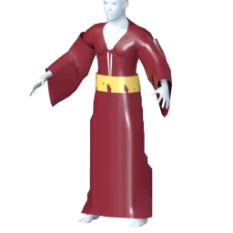 Kimono | Recolour | Silk |
| Back | twin swords | 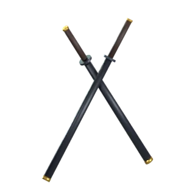 Twin swords | Wear | |
| Beard | full beard | Full beard | Wear |
| Slot | Name | What it does | Engine | Look |
|---|---|---|---|---|
| Basic attack | Combo Strikes | What its template does | Combo Strikes: hits up close | Its element's look |
| Active 1 | Encore Kha Ja | Asked below | Rising Uppercut: knocks up, hits up close | Its element's look |
| Active 2 | Bhussi Bar De | Asked below | Whirlwind: hits around it | Wind ring |
| Passive | Bloodlust | What its template does | Bloodlust: heals | Light flare |
| Ultimate | Kendrick Se Bhi Upar | Transforms into a bigger, stronger self | Super Form: changes size, powers up | Energy glow |
| Movement | Sky Step | What its template does | Sky Step: moves, powers up on the move | Wind streak |
The ultimate is Super Form, so the hero grows large. The form arrives in a burst of power with a flame aura, and while it lasts the hero gets:
- Spiky hair
- Eyes
Then the reader asks what it couldn't tell:
- What should Encore Kha Ja do? A devouring combo · A sound blast
- What should Bhussi Bar De do? A taunt · A stun
- Does he grow, shrink, or keep his size? Grows large · Keeps his size · Shrinks to tiny
Offline, with no picture to look at, the Forge still gets all three names from the words (Encore Kha Ja, Bhussi Bar De, Kendrick Se Bhi Upar) and asks three questions. It can't see the hat, so the role dresses the hero until you name the clothes.
Three beams, one template
Kamehameha, Galick Gun and Special Beam Cannon can all fire on Mega Beam (mage-mega-beam), with its numbers and its hit area: Spirit damage 562 (405.6 + 3.1× spirit) · Knock back 5 m · Beam width 1 m. Their looks are where they part ways.
| Move | Form | Colours | Pose | Charge | Impact |
|---|---|---|---|---|---|
| Kamehameha | Wave | Hip charge | Gather | Dome | |
| Galick Gun | Crackle | Palms forward | Crackling aura | Burst | |
| Special Beam Cannon | Drill | Two fingers | Glowing fingertip | Pierce |
Four transformations
Each one takes its own template, and that sets the size. The look does the rest.
| Form | Template | Size | Arrives as | Around it | Size change | And |
|---|---|---|---|---|---|---|
| Titan | Titan Formtank-titan-form | Colossal 1.6× | Lightning strike | Steam | Swell | Nothing more |
| Ant-Man | Shrink Formassassin-shrink-form | Tiny 0.8× | Implode | None | Snap |
|
| Nine-Tails | Avatar Formfighter-avatar-form | Huge 1.3× | Swirl | Chakra cloak | Swell |
|
| Super Saiyan | Ascended Formfighter-ascended-form | Its own | Burst of power | Flame aura | None |
|
The twenty starters
The heroes the game ships with are made the way yours is: a body, a physique for their build, their portrait as a photo face, library hair and a beard, a signature outfit of library items in their colours, and their gear.
Nothing about them is bespoke, so a remix keeps the whole look, and anyone can dress like them. They lose one thing on purpose, their own heights. A hero's size class sets its height, so the hitbox stays the truth.
Weight 0.46 · muscle 0.26 · age 0.55
- HairShort
- Upper bodyLeather jacket over a tee
- Lower bodyJeans
- FeetBoots
Weight 0.5 · muscle 0.33 · age 0.7
- HairSwept back
- Upper bodyLeather jacket over a tee
- Lower bodyJeans
- FeetBoots
Weight 0.33 · muscle 0.4 · age 0.7
- Upper bodyShirt
- Lower bodyTrousers
- FeetDress shoes
Weight 0.53 · muscle 0.5 · age 0.28
- HairCurls
- Upper bodyTee
- Lower bodyJeans
- FeetSneakers
Weight 0.5 · muscle 0.27 · age 0.64
- HairThinning
- Upper bodyBlazer over a silk top
- Lower bodyTrousers
- FeetDress shoes
- FaceSquare glasses
Weight 0.48 · muscle 0.33 · age 0.26
- HairShort
- Upper bodySweater
- Lower bodyJeans
- FeetSneakers
Weight 0.58 · muscle 0.25 · age 1
- HairShort fringe
- Upper bodySuit jacket, shirt and tie
- Lower bodyTrousers
- FeetDress shoes
- FaceRound glasses
Weight 0.66 · muscle 0.27 · age 0.91
- HairBig volume
- Upper bodyBlazer over a silk top
- Lower bodyTrousers
- FeetDress shoes
Weight 0.62 · muscle 0.2 · age 0.83
- HairSwept back
- Upper bodyBlazer over a silk top
- Lower bodyTrousers
- FeetDress shoes
Weight 0.41 · muscle 0.38 · age 0.57
- HairSwept back
- Upper bodyBlazer over a silk top
- Lower bodyTrousers
- FeetDress shoes
- FaceSquare glasses
Weight 0.18 · muscle 0.23 · age 0.6
- HairUnkempt
- BeardChin curtain
- Over the headTop hat
- Upper bodyFrock coat with bow tie
- Lower bodyTrousers
- FeetDress shoes
Weight 0.81 · muscle 0.2 · age 0.85
- HairThinning
- Full bodyThree-piece suit
- FeetDress shoes
- FaceCigar
Weight 0.4 · muscle 0.33 · age 0.77
- HairBuzz cut
- Upper bodySuit jacket, shirt and tie
- Lower bodyTrousers
- FeetDress shoes
Weight 0.56 · muscle 0.23 · age 1
- HairQuiff
- Upper bodySuit jacket, shirt and tie
- Lower bodyTrousers
- FeetDress shoes
Weight 0.6 · muscle 0.23 · age 1
- HairShort fringe
- BeardFull beard
- Upper bodyKurta with Nehru vest
- Lower bodyTrousers
- FeetDress shoes
- FaceSquare glasses
Weight 0.62 · muscle 0.23 · age 0.91
- HairBob
- Upper bodyBlazer over a silk top
- Lower bodyTrousers
- FeetDress shoes
Weight 0.48 · muscle 0.38 · age 0.4
- HairSide part
- Upper bodySuit jacket, shirt and tie
- Lower bodyTrousers
- FeetDress shoes
Weight 0.55 · muscle 0.41 · age 0.4
- HairCrop
- BeardStubble
- Upper bodyLong-sleeve tee
- Lower bodyCargo trousers
- FeetCombat boots
Weight 0.57 · muscle 0.38 · age 0.36
- HairLong
- Full bodyLong coat over a top
- FeetDress shoes
Weight 0.38 · muscle 0.38 · age 0.51
- HairSide part
- Upper bodyShirt
- Lower bodyTrousers
- FeetDress shoes
The library: 122 items, free to wear
Every item here is free for everyone, on the first three rungs.
We built them in Blender and ran each one through the same fit a player's generated item goes through, so a kimono from the library and a kimono someone generates tomorrow sit on the body the same way. Clothes and hair are bound to the shared body, and so are most hats. Rigid pieces like a top hat or a katana hang on a socket and take one colour.
Under each item are its channels with their finish, the cuts it allows, and a few of the words a prompt can use for it.
Hair 20
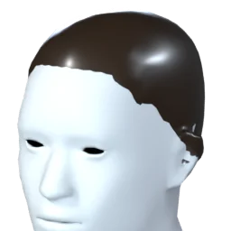
hair_buzz- hair Silk
buzz cut, buzzcut, shaved head
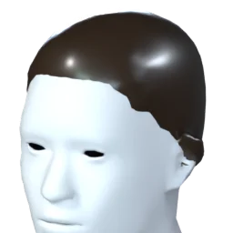
hair_crop- hair Silk
crop, crew cut, short crop
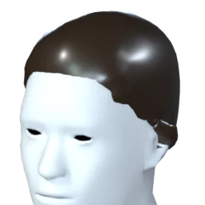
hair_short- hair Silk
short hair, short
hair_curly- hair Silk
curly hair, curls, curly
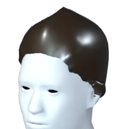
hair_swept- hair Silk
swept back, swept, pushed back
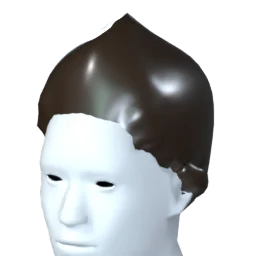
hair_quiff- hair Silk
quiff, pompadour, rockabilly
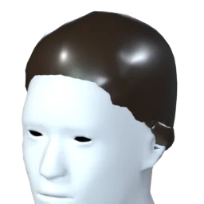
hair_side_part- hair Silk
side part, parted hair, side parting
hair_thin- hair Silk
thinning hair, balding, receding
hair_fringe_white- hair Silk
fringe, short bangs
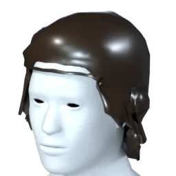
hair_unkempt- hair Silk
Cuts: length
unkempt, messy hair, shaggy
hair_bob- hair Silk
Cuts: length
bob, bob cut, chin length
hair_long- hair Silk
Cuts: length
long hair, long
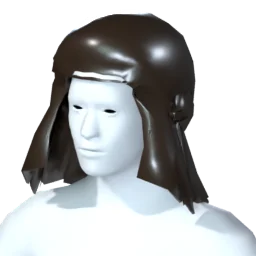
hair_volume- hair Silk
Cuts: length
voluminous, big hair, volume
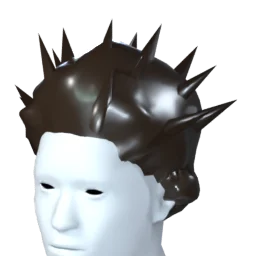
hair_spiky- hair Silk
spiky hair, spiky, spikes
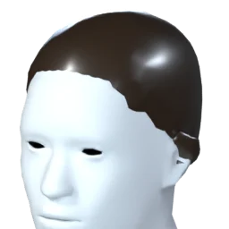
hair_slicked- hair Silk
slicked back, slick, gelled
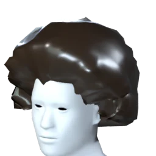
hair_afro- hair Silk
afro, big curly hair, fro
hair_ponytail- hair Silk
Cuts: length
ponytail, pony tail, tied back
hair_braid- hair Silk
Cuts: length
braid, plait, braided
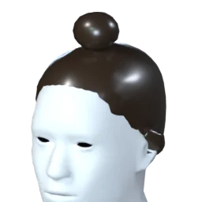
hair_top_knot- hair Silk
top knot, man bun, bun
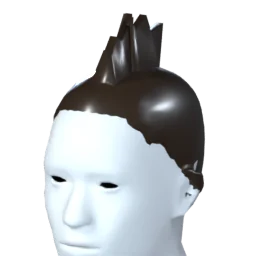
hair_mohawk- hair Silk
mohawk, mohican, punk
Beard 6
beard_full- beard Silk
full beard, beard, bearded
beard_goatee- beard Silk
goatee, van dyke
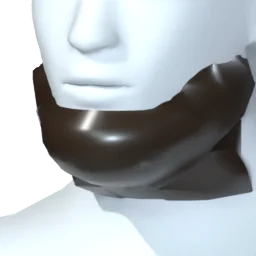
beard_chin_curtain- beard Silk
chin curtain, amish beard, lincoln beard
beard_stubble- beard Knit
stubble, five o clock shadow, scruff
beard_moustache- beard Silk
moustache, mustache, tache
beard_long- beard Silk
Cuts: length
long beard, wizard beard, viking beard
Over the head 16
beanie- knit Knit
beanie, knit cap, woolly hat
headband- band Cotton
headband, sweatband, hachimaki
cap- crown Cotton
- brim Cotton
cap, baseball cap, ball cap
hood- hood Cotton
hood, hooded, cowl
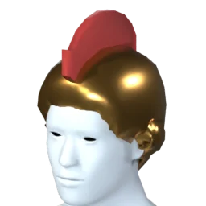
legion_helm- helm Metal
- crest Cotton
roman helmet, galea, legion helmet
fedora- felt Cotton
- band Silk
fedora, trilby, detective hat
cowboy_hat- felt Cotton
- band Leather
cowboy hat, stetson, ten gallon hat
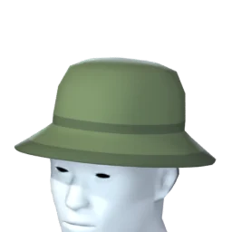
bucket_hat- hat Cotton
- band Cotton
bucket hat, fishing hat, boonie hat
kasa- straw Knit
- band Cotton
kasa, straw hat, conical hat
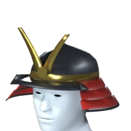
kabuto- lacquer Leather
- lacing Silk
- crest Metal
kabuto, samurai helmet, samurai helm
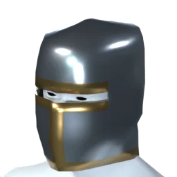
knight_helm- steel Metal
- trim Metal
knight helmet, knight helm, great helm

crown- Takes a colour
crown, king, queen

top_hat- Takes a colour
top hat, tophat, stovepipe

wizard_hat- Takes a colour
wizard hat, witch hat, pointy hat

horned_helm- Takes a colour
horned helmet, viking helmet, horns

halo- Takes a colour
halo, angel, saint
Upper body 15
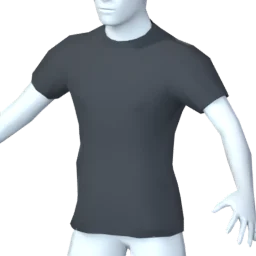
tee- tee Cotton
Cuts: sleeves, hem
t-shirt, tshirt, tee
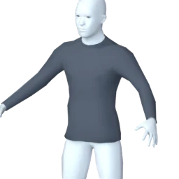
longsleeve- tee Cotton
Cuts: sleeves, hem
long sleeve, long-sleeve, longsleeve
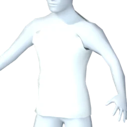
tank_top- tank Cotton
Cuts: hem
tank top, vest top, singlet
shirt- shirt Cotton
Cuts: sleeves, hem
shirt, button-up, button down
sweater- knit Knit
Cuts: sleeves, hem
sweater, jumper, pullover
hoodie- hoodie Knit
- strings Cotton
Cuts: sleeves
hoodie, hooded sweatshirt, sweatshirt
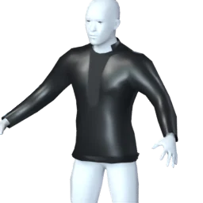
leather_jacket- jacket Leather
- tee Cotton
Cuts: sleeves
leather jacket, biker jacket, moto jacket
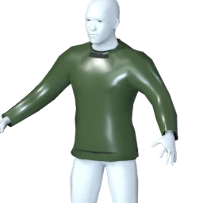
bomber- jacket Silk
- rib Knit
Cuts: sleeves
bomber, bomber jacket, flight jacket
suit_jacket- jacket Cotton
- shirt Cotton
- tie Silk
suit, suit jacket, business suit
blazer_silk- jacket Cotton
- top Silk
blazer, womens suit, power suit
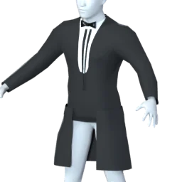
frock_coat- coat Cotton
- shirt Cotton
- bowtie Silk
Cuts: length
frock coat, tailcoat, victorian coat
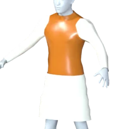
kurta_vest- kurta Cotton
- vest Silk
Cuts: length
kurta, nehru jacket, nehru vest
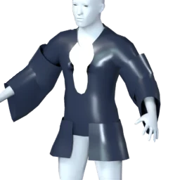
haori- haori Silk
- inner Cotton
haori, japanese jacket, kimono jacket
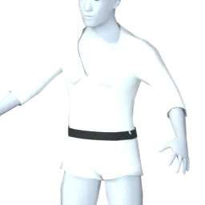
gi_top- gi Cotton
- belt Cotton
Cuts: sleeves
gi, karate gi, judo gi
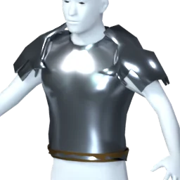
breastplate- plate Metal
- trim Metal
breastplate, cuirass, chest armour
Lower body 9
trousers- trousers Cotton
Cuts: legs
trousers, pants, slacks
jeans- denim Denim
- belt Leather
Cuts: legs
jeans, denim, blue jeans
cargo- cargo Cotton
Cuts: legs
cargo pants, cargos, combat trousers
shorts- shorts Cotton
Cuts: legs
shorts, board shorts, bermuda
track_pants- track Knit
- stripe Cotton
Cuts: legs
track pants, joggers, sweatpants
hakama- hakama Cotton
- ties Cotton
Cuts: length
hakama, samurai trousers, pleated trousers
gi_trousers- gi Cotton
Cuts: legs
gi pants, karate pants, martial arts trousers
skirt- skirt Cotton
Cuts: length
skirt, a-line skirt, midi skirt
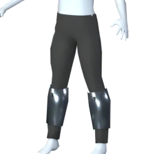
greaves- plate Metal
- trousers Cotton
Cuts: legs
greaves, leg armour, shin guards
Full body 12
kimono- kimono Silk
- obi Silk
- collar Silk
Cuts: length
kimono, yukata, japanese robe
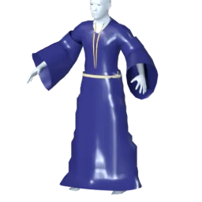
wizard_robe- robe Silk
- trim Silk
- rope Cotton
Cuts: length
wizard robe, robe, mage robe
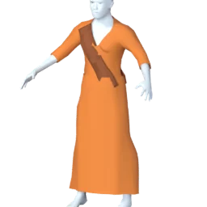
monk_robe- robe Cotton
- sash Cotton
Cuts: length
monk robe, monk, shaolin
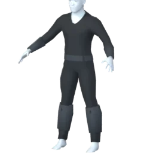
ninja- garb Cotton
- wraps Cotton
ninja, shinobi, ninja outfit
martial_gi- gi Cotton
- belt Cotton
Cuts: sleeves, legs
karate gi, martial arts uniform, gi
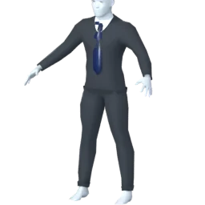
three_piece- suit Cotton
- shirt Cotton
- tie Silk
Cuts: legs
three piece suit, three-piece, waistcoat suit
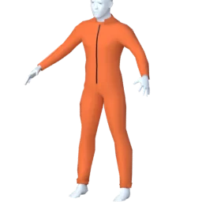
jumpsuit- suit Cotton
- zip Metal
Cuts: sleeves, legs
jumpsuit, coveralls, boiler suit
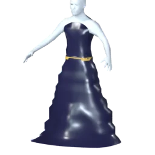
gown- gown Silk
- sash Silk
Cuts: length
gown, ball gown, evening dress
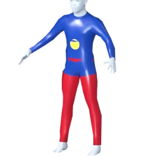
bodysuit- suit Silk
- panels Silk
- emblem Glow
Cuts: sleeves, legs
superhero suit, bodysuit, spandex
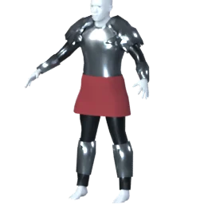
knight_armour- plate Metal
- mail Metal
- tabard Cotton
knight armour, knight armor, plate armour
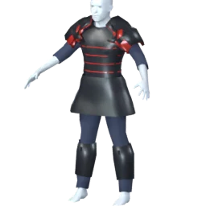
samurai_armour- lacquer Leather
- lacing Silk
- cloth Cotton
samurai armour, samurai armor, o-yoroi
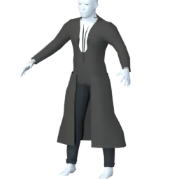
long_coat- coat Cotton
- top Cotton
- trousers Cotton
Cuts: length
long coat, trench coat, duster
Back 10
cape- cape Silk
- clasp Metal
Cuts: length
cape, cloak, superhero cape
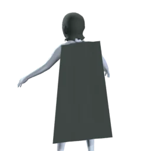
hooded_cloak- cloak Cotton
Cuts: length
hooded cloak, ranger cloak, cloak with hood
scarf- scarf Knit
Cuts: length
scarf, muffler, neck scarf

wings- Takes a colour
wings, angel wings, feathered wings

jetpack- Takes a colour
jetpack, jet pack, rocket pack

quiver- Takes a colour
quiver, arrows, arrow quiver
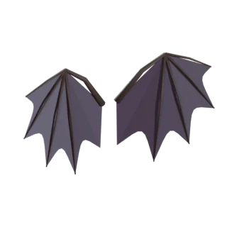
bat_wings- Takes a colour
bat wings, demon wings, devil wings
twin_swords- Takes a colour
twin swords, dual swords, two swords
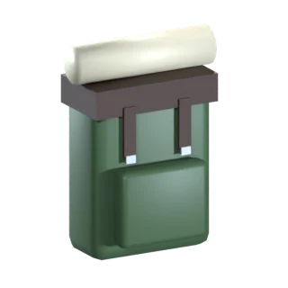
backpack- Takes a colour
backpack, rucksack, adventurer pack
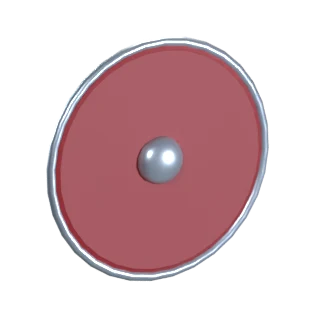
back_shield- Takes a colour
shield on back, shield on the back, back shield
Feet 9
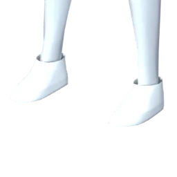
sneakers- upper Leather
- sole Cotton
sneakers, trainers, running shoes
high_tops- upper Cotton
- sole Cotton
high tops, hi tops, converse
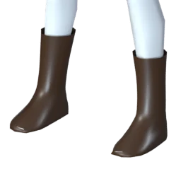
boots- leather Leather
boots, leather boots, riding boots
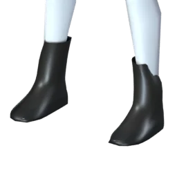
combat_boots- leather Leather
- sole Leather
combat boots, military boots, army boots
dress_shoes- leather Leather
dress shoes, oxfords, brogues
sandals- strap Leather
- sole Leather
sandals, flip flops, roman sandals
geta- wood Leather
- strap Cotton
geta, zori, japanese sandals
sabatons- plate Metal
sabatons, armoured boots, armored boots
foot_wraps- wraps Cotton
foot wraps, bandages, tabi
Face 9
oni_mask- lacquer Leather
- brows Leather
- horns Leather
oni mask, demon mask, hannya mask
ninja_mask- cloth Cotton
ninja mask, face mask, shinobi mask
cigar- leaf Leather
- band Silk
- ember Glow
cigar, cigarillo, smoking

glasses- Takes a colour
round glasses, glasses, spectacles

shades- Takes a colour
sunglasses, shades, aviators

eyepatch- Takes a colour
eyepatch, eye patch, pirate

visor- Takes a colour
visor, cyber visor, cyborg
square_glasses- Takes a colour
square glasses, rectangular glasses, reading glasses
scouter- Takes a colour
scouter, power scanner, saiyan scouter
Either hand 14

katana- Takes a colour
katana, samurai sword, japanese sword

sword- Takes a colour
sword, longsword, broadsword

dagger- Takes a colour
dagger, knife, dirk

axe- Takes a colour
axe, battle axe, battleaxe

hammer- Takes a colour
hammer, warhammer, war hammer

spear- Takes a colour
spear, lance, javelin

staff- Takes a colour
staff, magic staff, quarterstaff

wand- Takes a colour
wand, magic wand, magician

pistol- Takes a colour
pistol, gun, handgun
microphone- Takes a colour
microphone, mic, singer
scythe- Takes a colour
scythe, reaper, grim reaper
rifle- Takes a colour
rifle, sniper rifle, assault rifle
spellbook- Takes a colour
spellbook, grimoire, magic book
electric_guitar- Takes a colour
electric guitar, guitar, bass guitar
The off hand 2

shield- Takes a colour
shield, round shield, buckler

bow- Takes a colour
bow, longbow, recurve bow